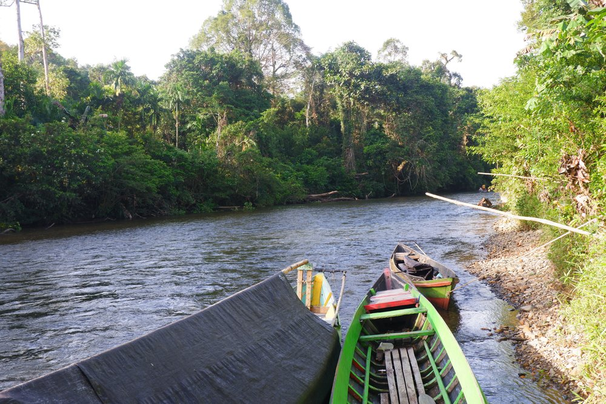

Sofyan Sodya Yadyaunnajabah Muhammad Said Sanggabuana Almira Prastisa Dewi Arif Rahman Hakim Ryan Cordias Tatie Ateng Achmad Candra Irawan Dede Sakaria Sitiwati WWF Indonesia 2026
Dokumen Kajian Kerentanan dan Risiko Bencana Terkait Iklim doc. Dea SYN
Indonesia sebagai negara kepulauan, dihadapkan pada tantangan perubahan iklim yang nyata. Dampak yang dirasakan tidak hanya terkait kedaulatan negara akibat potensi perubahan tapal batas negara, tetapi juga ancaman terhadap panghidupan warga negaranya. Berbagai dampak yang telah dirasakan saat ini merupakan gambaran kondisi yang akan dihadapi di masa depan, dengan kemungkinan kondisi yang lebih buruk. Dalam konteks bencana, anomali cuaca atau cuaca ekstrem menjadi pemicu banyak kejadian bencana di berbagai wilayah di Indonesia. BNPB mencatat, sepanjang 2025 telah terjadi 4.727 kejadian bencana. Jumlah tersebut meningkat dibandingkan tahun 2024, dengan 3.472 kasus bencana. Per April 2026, jumlah kejadian bencana telah mencapai angka 806 kejadian. Total penduduk terdampak mencapai 2.350.305 jiwa, 214 meninggal, 13 hilang, serta 1.669 terluka. Jumlah tersebut berpotensi meningkat seiring potensi ancaman yang ada. Baik terkait dengan iklim, kondisi geologis, kerusakan ekologis maupun aspek manusia. Kejadian bencana di Indonesia didominasi jenis hidrometeorologis. Tahun 2026, 98,98% kejadian bencana berupa banjir, longsor, cuaca ekstrim, kekeringan, kebakaran hutan dan lahan, serta abrasi atau gelombang tinggi. Sedangkan tahun 2025, bencana terkait iklim ini mencapai 99,26% kejadian. Kejadian bencana hidrometeorologis terkait erat dengan iklim. Namun dampak yang ditimbulkan berkorelasi dengan fungsi ekologis kawasan yang ada. Menurun atau hilangnya fungsi ekologis akibat berkurang atau hilangnya tutupan lahan, perubahan bentang alam, kerusakan DAS, lahan gambut, pesisir dan pulau kecil sampai sampah meningkatkan daya rusak dan luasan wilayah terdampak. Selain upaya mitigasi dalam meredam emisi gas rumah kaca, Indonesia dituntut melakukan adaptasi. Perubahan sifat dan pola musim, anomali cuaca maupun cuaca ekstrem yang terjadi dan dirasakan masyarakat pada dua puluh tahun terakhir menjadi ancaman serius. Ketidakmampuan pemerintah dan masyarakat menghadapi perubahan dan dampak yang ditimbulkan, berpotensi meningkatkan kerentanan dan risiko bencana . WWF Indonesia sebagai organisasi konservasi dan pembangunan berkelanjutan, menempatkan perubahan iklim sebagai isu penting yang dapat berpengaruh besar terhadap ekosistem dan penghidupan masyarakat. Untuk itu, selain upaya mitigasi, juga mendorong terbangunnya resilensi masyarakat melalui upaya adaptasi. Nature Base Solution atau Solusi Berbasis Alam menjadi pilihan adaptasi dalam menyiapkan komunitas menghadapi dampak perubahan iklim yang lebih berkelanjutan. Kajian kerentanan dan risiko iklim menyajikan informasi dasar dan analisis tingkat kerentanan dan risiko masyarakat di empat desa kajian, Desa Tubang Habangoi, Tumbang Mangara, Tumbang Kawei, dan Karuing di Kabupaten Katingan, Provinsi Kalimantan Tengah dalam menghadapi dampak perubahan iklim. Dokumen juga menyajikan pilihan aksi prioritas sebagai upaya menekan kerentanan dan risiko terhadap penghidupan masyarakat. Pengkajian kerentanan dan risiko iklim dilakukan dari tanggal 12 – 24 Januari 2026. Tujuan pengkajian adalah untuk mengetahui berbagai persoalan terkait dampak perubahan iklim dan tingkat kerentanan serta menyusun rencana aksi prioritas masyarakat. Proses ini diharapkan menjadi model pengarusutamaan isu perubahan iklim ke dalam kebijakan pemerintah desa dan pembangunan wilayah di Indonesia yang didukung oleh WWF Indonesia. Yogyakarta, April 2026 Tim Kajian Kerentanan Dokumen Kajian Kerentanan dan Risiko Bencana Terkait Iklim
Perubahan iklim yang terjadi telah berdampak secara nyata terhadap sistem penghidupan. Perubahan tidak hanya dirasakan di Indonesia, tetapi juga oleh seluruh penduduk bumi. Berbagai agenda untuk menekan dampak buruk yang mengancam kehidupan terus bergulir. Upaya ini tidak hanya melibatkan para pemimpin dunia, ilmuwan, dan organisasi masyarakat sipil, tetapi juga dunia usaha dan masyarakat adat. Kerusakan lingkungan yang menyebabkan menurunnya atau hilangnya fungsi ekologis semakin meningkatkan kerentanan dan risiko masyarakat dalam menghadapi dampak perubahan iklim. Peningkatan populasi, perubahan tata guna lahan, serta kebijakan yang tidak berorientasi pada perlindungan wilayah hutan dan ekosistem gambut merupakan sebagian dari banyak faktor yang memengaruhi kerentanan dan risiko di tingkat masyarakat. Tujuan pengkajian kerentanan dan risiko iklim adalah untuk memahami praktik masyarakat di empat desa: Desa Tumbang Habangoi, Kecamatan Petak Malai; Desa Tumbang Mangara dan Tumbang Kawei, Kecamatan Sanaman Mantikei; serta Desa Karuing, Kecamatan Kamipang, Kabupaten Katingan Provinsi Kalimantan Timur dalam pengelolaan sumber penghidupan menghadapi dampak perubahan iklim dan bencana dalam menyiapkan resilensi komunitas berbasis ekosistem. Pengkajian menggunakan metode kualitatif dengan pendekatan partisipatif. Data dan informasi dikumpulkan melalui proses wawancara semi terstruktur, diskusi kelompok terfokus dan observasi lapang. Pengkajian menggunakan metode kualitatif dengan pendekatan partisipatif. Piranti yang digunakan merupakan pengembangan dari Participatory Rural Appraisal (PRA) yang disesuaikan dengan mengkaji kerentanan dan risiko iklim. Penggalian data dan informasi dari masyarakat menggunakan teknik wawancara semi terstruktur, transek atau observasi dan diskusi kelompok terfokus. Formulasi dalam menentuan tingkat kerentanan adalah V = (E + S) : CA dan untuk tingkat risiko R = H*V dengan proses penilaian secara mandiri (self-assessment). Pada tahap akhir, masyarakat secara kolektif mengidentifikasi masalah terkait iklim yang selanjutnya disusun berdasarkan masalah yang dianggap paling membebani. Pilihan masalah yang paling membebani kemudian dibahas lebih lanjut dalam lokakarya (semiloka) sebagai rencana prioritas adaptasi komunitas. Pengkajian yang dilaksanakan pada 15–23 Mei 2025 menunjukkan kelas kerentanan Sedang. Tingkat kerentanan ini menunjukkan telah ada atau dirasakan permasalahan iklim dalam penghidupan masyarakat. Indikator dengan potensi dampak tinggi atau kapasitas adaptasi rendah harus menjadi perhatian serius. Kelemahan utama dalam kapasitas adaptasi meliputi kurangnya aksi antisipasi terhadap ancaman iklim; perlindungan kawasan penting sebagai sumber penghidupan yang belum optimal; ketergantungan pada satu kebutuhan pokok yang tidak diproduksi lokal; mata pencaharian yang belum beragam; serta upaya adaptasi yang belum komprehensif terhadap perubahan. Selain masalah iklim, terdapat faktor non-iklim yang memengaruhi penghidupan masyarakat. Limbah perkebunan sawit dan larutan material dari proses tambang emas menyebabkan air sungai yang menjadi sumber air utama bagi masyarakat menjadi keruh dan tidak dapat dikonsumsi. Kondisi ini mengubah kebiasaan konsumsi, dari pemanfaatan air sungai ke air isi ulang atau air kemasan. Upaya pemenuhan kebutuhan air bersih dilakukan dengan pengadaan sumur bor, meskipun tingkat keberhasilannya masih rendah. Masyarakat secara alamiah telah melakukan upaya penyesuaian berdasarkan pengalaman kejadian atau informasi yang diterima (copying mechanism). Namun, adaptasi perubahan iklim sebagai strategi komprehensif belum sepenuhnya diterapkan. Hal mendasar dari adaptasi adalah perubahan iklim, proyeksi iklim dan dampaknya belum terinformasikan di masyarakat. Sehingga upaya atau respon atas ancaman, baik bersifat respon, kesiap siagaan atau mitigasi bencana yang dilakukan baru sebatas mekanisme koping berbasis pengalaman atau kejadian yang dirasakan atau alami. Demikian juga terkait pengembangan mata pencaharian, pengelolaan air bersih, energi dll. Dokumen Kajian Kerentanan dan Risiko Bencana Terkait Iklim
Pengantar .............................................................................................................................................. iii Ringkasan Eksekutif .............................................................................................................................. Daftar Isi ................................................................................................................................................. BAGIAN SATU: GAMBARAN UMUM ............................................................................................. 1 1. Latar Belakang .................................................................................................................................... 2 2. Tujuan ................................................................................................................................................ 3. Metode dan Pendakatan .................................................................................................................... 3 4. Pengumpulan Data ............................................................................................................................ 5. Waktu dan Tempat ............................................................................................................................. 5 BAGIAN DUA: SUMBER DAYA PENTING PENGHIDUPAN ......................................................... 7 1. Profil Wilayah ..................................................................................................................................... 8 2. Sosial Budaya dan Ekonomi .............................................................................................................. 23 BOX - Pengetahuan dan Kearifan Lokal dalam Pengelolaan Sumber Daya Alam ................................... 26 3. Kalender Musim ................................................................................................................................. 4. Perubahan dan Kecenderungan ........................................................................................................ 37 5. Sejarah Kebencanaan ....................................................................................................................... BAGIAN TIGA: KERENTANAN DAN RISIKO IKLIM ..................................................................... 51 1. Metode dan Formulasi ....................................................................................................................... 52 2. Faktor Berpengaruh terhadap Kerentanan dan Risiko Iklim .............................................................. 54 3. Kerentanan terhadap Dampak Perubahan Iklim ................................................................................ 62 4. Risiko Bencana terkait Iklim ............................................................................................................... 5. Adaptasi untuk Reduksi Risiko Bencana ........................................................................................... 72 BAGIAN EMPAT: RENCANA AKSI UNTUK RESILIENSI ............................................................... 75 BAGIAN LIMA: KESIMPULAN DAN REKOMENDASI .................................................................. 78 1. Kesimpulan ........................................................................................................................................ 78 2. Rekomendasi ..................................................................................................................................... 80 LAMPIRAN ............................................................................................................................................. vi REFERENSI .......................................................................................................................................... viii Dokumen Kajian Kerentanan dan Risiko Bencana Terkait Iklim
Dokumen Kajian Kerentanan dan Risiko Bencana Terkait Iklim doc. Dea SYN
Perubahan iklim yang terjadi, telah banyak dirasakan dampaknya terhadap berbagai penghidupan manusia. Pemanasan global sebagai buah berbagai aktivitas manusia masih terus berlanjut. Dalam satu dekade terakhir, laju pemanasan global dilaporkan meningkat hampir dua kali lipat dibandingkan periode 1970-an. Saat ini, suhu Bumi telah naik sebesar 0,35 derajat Celsius (Kompas, 2026). Sementara, laporan World Meteorological Organization (State of the Global Climate 2023), tahun 2023 merupakan tahun terpanas sepanjang sejarah, dengan anomali temperatur global 1,45 derajat celcius diatas periode praindustri. Selama periode 2015-2023 adalah sembilan tahun terpanas sepanjang sejarah bumi. Dalam konteks praktis, perubahan karakteristik unsur cuaca dan musim, berpengaruh besar terhadap pengetahuan dan kearifan lokal, kebiasan maupun yang telah ada/dimiliki masyarakat. Sebagai sebuah sistem yang telah melekat pada penghidupan, perubahan kerap berdampak buruk dan mempengaruhi kualitas kehdupan. Petani yang selama ini mengandalkan siklus musim, mengalami kesulitan menentukan awal masa tanam maupun perawatan. Perubahan yang terjadi tidak lagi sesuai dengan pengetahuan dan pengalaman yang dimiliki. Berbagai tanda alam yang selama ini menjadi indikator, tidak lagi berkesesuaian. Ancamannya bukan lagi gagal panen, tapi kegagalan lebih awal, gagal tanam. Hal yang sama dialami nelayan kecil. Sebagai mata pencaharian yang mengandalkan siklus musim, tidak saja mempengaruhi hasil tangkapan, risiko keselamatan turut dipertahukan. Pada wilayah kepulauan dan wilayah terisolir, gangguan akibat perubahan iklim seperti cuaca ekstrim menyebabkan berbagai kebutuhan dasar terganggu. Semakin besar ketergantungan kebutuhan dasar di pasok dari luar, semakin tinggi kerentanan maupun risiko yang dihadapi. Kabupaten Katingan Provinsi Kalimantan Tengah berdasarkan kajian kerentanan dan risiko iklim yang dilakukan Pemkab Katingan - WWF Indonesia - Piarea tahun 2025 menunjukan terjadinya perubahan curah hujan, suhu maupun kelebaban dalam 30 tahun terakhir pada beberapa wilayahnya. Perubahan ini diproyeksikan akan berlanjut untuk 30 tahun ke depan. Profil suhu tahunan di Katingan pada periode 1991–2020 diproyeksikan mengalami perubahan pada 2021–2050 antara 1,1 – 1,50C. Wilayah dataran rendah di selatan seperti Kamipang dan Mendawai menjadi wilayah dengan kenaikan tertinggi yang meningkat antara 1,4 – 1,50C. sedangkan wilayah tengah seperti Tewang Sangalang Garing, dan Pulau Malan mengalami kenaikan hampir setara,yakni +1,3°C–1,4°C. sedangkan dataran tinggi seperti Katingan Hulu dan Marikit mencatat kenaikan lebih ringan, sekitar +1,1°C–1,2°C. Pola ini menunjukkan bahwa pemanasan akibat perubahan iklim tidak merata di seluruh wilayah Katingan. Implikasi perubahan tersebut,khususnya pada wilayah selatan sebagai area paling terdampak, yang berpotensi menimbulkan tekanan lebih besar terhadap sumber daya air, sektor pertanian serta peningkatan ancaman kekeringan, kebakaran hutan dan lahan dan kesehatan. Pada curah hujan, juga mengalami kenaikan intensitas antara 10 – 15% yang diproyeksikan terjadi pada 2021 – 2050. Bagi Kabupaten Katingan, dimana wilayah permukiman lebih banyak menempati areal limpasan air (sempadan sungai - rawa) dan areal genangan air (wilayah cekungan), wilayah terpapar banjir akan semakin meluas dan lebih lama. Hal yang sama pada areal pertanian yang juga menempati areal genangan atau paparan banjir. Dampak banjir, kekeringan maupun kebakaran hutan tidak hanya pada pada ancaman jiwa atau kesehatan, hilang atau rusaknya harta benda, tapi juga pada Dokumen Kajian Kerentanan dan Risiko Bencana Terkait Iklim
terganggunya sumber penghidupan masyarakat. Potensi kerugian tidak hanya dilihat dari sisi hilang atau rusak, tapi juga hilangnya kesempatan mendapatkan penghasilan atau memenuhi kebutuhan dasar (sandang, pangan, papan, layanan kesehatan, pendidikan dll) sebagai hak paling mendasar sebagai warga negara. Sebagai keberlanjutan kajian kerentanan dan risiko Iklim yang telah dilakukan WWF Indonesia bersama Pemda Kabupaten Katingan, penting untuk menyiapkan sebuah model resilensi komunitas dalam menghadapi perubahan dan proyeksinya akibat dampak perubahan iklim. Komunitas perlu menunjukan pola adaptasi berbasis sumberdaya lokal (nature base) sebagai solusi terhadap tantangan perubahan yang berpotensi terjadi. Pola penghidupan selaras alam tumbuh dan berkembang secara turun temurun antar generasi pada kehidupan masyarakat Dayak Ngaju, Katingan, Ot Danum atau Dohoi maupun suku-suku lain di Katingan. Ketersediaan sumberdaya alam mampu menopang kebutuhan penghidupan. Mata pencaharian dilakukan selaras dengan musim maupun karakteristik wilayah yang ada. Demikian juga pada sisi sosial budaya maupun sistem adat yang dijalani. Pola kehidupan selaras alam seimbang dan berkelanjutan jika ditopang sistem dan fungsi ekologis wilayah memenuhi daya dukung atas pemanfaatannya. Berbagai perubahan yang terjadi, baik bentang alam, ekosistem, iklim, maupun sosial budaya masyarakat, berpotensi mempengaruhi keselarasan yang telah terbentuk sebelumnya. Yang pada akhirnya dapat berdampak pada ketidakmampuan masyarakat memenuhi berbagai kebutuhan dalam menjalani penghidupan yang bermartabat. Rotan sebagai komoditas penting masyarakat Dayak dan Pemda Kabupaten Katingan saat ini mengalami tantangan besar. Tidak saja dari sisi komoditas perdagangan dan nilai ekonomi, juga terhadap keberadaannya di alam. Alih fungsi lahan yang m e n g a r a h p a d a p e r k e b u n a n m o n o k u l t u r , menempatkan tanaman rotan berkurang. Demikian juga dengan ancaman kebarakaran hutan dan lahan pada wilayah gambut sebagai bagian ekosistem rotan. Ketidakpastin nilai rotan dibandingkan komoditas lainnya seperti perkebunan kelapa sawit, tambang atau pemanfaatan kayu alam, akan menggeser nilai penting secara pasti. Dan pada akhirnya tanaman ini tidak lagi dianggap penting, termasuk pada fungsi-fungsi sosial budaya dan adat karena tergantikan dengan barang atau komoditas lain yang lebih mudah didapat dan ekonomis. Hal yang sama terjadi pada berbagai buah- buahan lokal dalam prosesi adat yang digantikan dengan berbagai jenis buah import maupun perlengkapan dari plastik atau logam. Pengkajian yang dilakukan secara partisipatif ini bertujuan memahami praktik masyarakat dalam pengelolaan sumber penghidupan menghadapi dampak perubahan iklim dan bencana dalam menyiapkan resilensi komunitas berbasis ekosistem. Secara umum, pengkajian menggunakan metode kualitatif dalam memahami fenomena sosial budaya dan ekonomi di masyarakat terkait perubahan iklim, dampak dan pengaruhnya terhadap sistem penghidupan di wilayah desa terpilih. Topik pengkajian difokuskan pada: Ancaman dan kerentanan iklim serta risiko bencana terkait iklim (jenis dan dampaknya terhadap lima aset penghidupan) serta upaya penanggulangan bencana (disaster risk management) yang dilakukan pemerintah desa dan masyarakat; Mengidentifikasi kapasitas masyarakat, baik pengetahuan dan kearifan lokal dan penerapannya serta makna filosofis dan substasi dari sistem adat yang ada dan dijalankan terkait perubahan iklim, jaring pengaman sosial dan penanggulangan bencana Kebijakan (regulasi) pada tingkat desa terkait pengelolaan lingkungan, perubahan iklim dan penanggulangan bencana Rotan dan sumberdaya potensial lain di masyarakat sebagai komoditas berkelanjutan; Penggalian data dan informasi pada masing-masing topik disesuaikan kebutuhan analisis untuk mendapatkan hasil dan kesimpulan secara obyektif. Pengambilan sampling mempertimbangkan keterwakilan pada tingkat desa. Baik dari sisi jumlah dan latar belakang responden, usia, jenis kelamin, pendidikan maupun mobilitas yang mencerminkan pengalaman berinteraksi dengan pihak luar atau pengetahuan lapang. Pendekatan dalam proses pengkajian dilakukan secara partisipatif. Formulasi dalam mengukur tingkat kerentanan dan risiko bencana terkait iklim yang digunakan adalah R = H*V (V = (E + V) : CA)). Formulasi ini umum digunakan di Indonesia untuk mengetahui tingkat risiko iklim yang mengadopsi formulasi risiko bencana; formulasi dalam konteks pengkajian kualitatif ditempatkan sebagai media untuk mempermudah pengumpulan data dan informasi yang dari masyarakat untuk mengidentifikasi faktor-faktor pembentuk dan pemicu dari masing- masing variabel risiko. Baik dari sisi ancaman (hazard) sebagai variabel utama pembentuk risiko maupun kerentanan (vulnerability) sebagai variabel yang Dokumen Kajian Kerentanan dan Risiko Bencana Terkait Iklim
terpengaruh dan membentuk risiko dilihat dari sisi keterpaparan (exposure), kepekaan (sensitivity) dan besaran kapasitas adaptif yang dimiliki masyarakat dan lingkungan serta sumberdaya yang mereka miliki. Topik terkait mata pencaharian utama, ketahaan dan kedaulatan pangan serta pespektif gender menggunakan komponen-komponen dari besaran proporsi keterpenuhan atas indikator dari masing- masing topik; jumlah, ketersediaan, akses, waktu, efektifitas, keterlibatan dll. Rotan sebagai komoditas potensial dilihat dari sisi; 1) Mengidentifikasi dan memetakan kalender potensi rencana pemanenan rotan dalam satu tahun terkait dampak perubahan iklim, komoditas non rotan, kondisi sosial dan ekonomi, budaya dan tradisi, tenaga panen, dan aktivitas lainnya yang berpengaruh pada rencana pemanenan rotan; 2) Melakukan penilaian nilai ekonomi atas faktor pembanding komoditas nonrotan dalam upaya penguatan rotan sebagai sebuah komoditas; Pengetahuan, kearifan lokal dan sistem adat terkait pengelolaan lingkungan, perubahan iklim dan penanggulangan bencana; lebih memahami secara filosifis dan praktiknya, perubahan dan kecenderungan serta implikasinya dalam membentuk resiliensi komunitas Sebagai pendekatan kualitatif, proses analisis dan pengambilan kesimpulan menggunakan induksi analitis (analytic induction) dan ekstrapolasi (extrpolation). Induksi analitis merupakan pendekatan pengolahan data ke dalam konsep-konsep dan katagori-katagori (bukan frekuensi). Jadi simbol-simbol yang digunakan tidak dalam bentuk numerik, melainkan dalam bentuk deskripsi, yang ditempuh dengan cara merubah data ke formulasi. Sedangkan ekstrapolasi merupakan cara pengambilan kesimpulan yang dilakukan simultan pada saat proses induksi analitis dan dilakukan secara bertahap dari satu kasus ke kasus lainnya, kemudian dari proses analisis itu dirumuskan suatu pernyataan teoritis Untuk mendapatkan kedalaman data sesuai prinsip induksi analitis, proses penggalian data dan informasi menggunakan lima teknik utama: Wawancara semi-terstruktur Wawancara dilakukan dengan informan kunci seperti tokoh adat, pemerintah desa, pengelola hutan, dan ketua kelompok tani rotan. Teknik ini menggunakan panduan pertanyaan sebagai kerangka dasar, namun memberikan ruang fleksibilitas bagi peneliti untuk mengeksplorasi jawaban informan secara mendalam. Tujuan dari wawancara ini adalah untuk menggali aspek filosofis sistem adat, sejarah perubahan iklim lokal, kebijakan desa, serta pandangan strategis mengenai tantangan pengelolaan rotan berkelanjutan. Hasil akhirnya adalah narasi yang mendalam mengenai keterkaitan antara nilai budaya dengan praktik pelestarian lingkungan. Wawancara Rumah Tangga Wawancara dilakukan secara langsung pada tingkat unit keluarga menggunakan kuesioner terbuka dan tertutup. Responden dipilih untuk memastikan keterwakilan populasi berdasarkan usia, jenis kelamin, dan mata pencaharian. Tujuannya adalah untuk mengumpulkan data mikro yang mencakup profil aset penghidupan, tingkat ketergantungan ekonomi keluarga terhadap rotan, serta bagaimana dampak nyata perubahan iklim mempengaruhi ketahanan pangan dan kondisi ekonomi harian mereka. Hasilnya akan memberikan gambaran mengenai tingkat keterpaparan dan kepekaan (sensitivity) pada level rumah tangga, serta mengidentifikasi strategi adaptasi mandiri yang telah diterapkan oleh keluarga. Transeks/Observasi lapang Transeks dilakukan sebagai pendalaman hasil wawancara maupun data dan informasi yang diperoleh dari sumber sekunder di lapangan. Transeks selain bentuk verifikasi dari data dan informasi yang terkumpul dan pendalaman informasi, juga menjad media mengembangkan gagasan atau ide dari masyarakat terhadap persoalan-persoalan yang dihadapi terkait obyek yang dikunjungi. Proses dialog diarahkan untuk menemukan akar persoalan, faktor pembentuk dan yang berkontribusi masalah dan dampak yang ditimbulkan, upaya yang telah dilakukan dalam menghadapi persoalan maupun pengembangan ide atau gagasan masyarakat sendiri. Diskusi Kelompok Terfokus (Focus Group Discussion - FGD) FGD dilakukan dengan mengumpulkan kelompok masyarakat yang memiliki karakteristik serupa (misalnya: kelompok perempuan, kelompok pemanen rotan, atau kelompok pemuda) untuk mendiskusikan topik spesifik secara kolektif. Tujuannya adalah untuk melakukan verifikasi silang (triangulasi) atas data yang ditemukan pada wawancara individu, menyusun kalender musim pemanenan rotan, serta memetakan wilayah rawan bencana secara partisipatif. Interaksi antarpeserta diharapkan mampu memicu ingatan kolektif terkait tren perubahan iklim di desa. Adapun output yang diharapkan adalah Kesepakatan komunitas mengenai rangking risiko bencana dan identifikasi kapasitas adaptif yang tersedia di lingkungan mereka. Dokumen Kajian Kerentanan dan Risiko Bencana Terkait Iklim
Lokakarya Diseminasi dan Penyusunan Rencana Aksi Lokakarya ini merupakan puncak dari serangkaian proses partisipatif yang berhasil mempertemukan seluruh pemangku kepentingan di desa. Kegiatan ini dibagi menjadi dua fase utama. Fase pertama adalah Diseminasi, di mana temuan hasil riset seperti kajian risiko dan potensi rotan dipaparkan kembali kepada masyarakat. Tujuannya adalah untuk mendapatkan umpan balik dan validasi akhir dari masyarakat, yang berfungsi sebagai kontrol untuk memastikan bahwa data yang dianalisis bersifat objektif dan benar-benar mencerminkan realitas yang ada di lapangan. Fase kedua adalah Penyusunan Rencana Aksi, yang berfokus pada perumusan strategi adaptasi terhadap perubahan iklim dan rencana pengelolaan rotan yang berkelanjutan. Dalam fase ini, peserta secara aktif diajak untuk menyusun prioritas program, menetapkan pembagian peran dan tanggung jawab, serta mengintegrasikan semua poin-poin yang telah disepakati tersebut ke dalam dokumen perencanaan resmi desa, sesuai dengan mandat yang ditetapkan oleh Permendagri atau Permendes. Hasil akhir (Output) dari keseluruhan proses ini adalah terbentuknya Dokumen Rencana Aksi Komunitas (RAK) yang memiliki legitimasi sosial yang kuat di tingkat masyarakat dan siap untuk didorong menjadi kebijakan regulasi resmi di tingkat desa. Sebagai riset aksi untuk pemberdayaan komunitas, proses dilakukan dengan pendekatan partisipatif. Pengkajian tidak sekedar menggali dan mengumpulkan data dan informasi, tapi juga menjadi media pembelajaran; berbagi data dan informasi, pengetahuan maupun pengalaman antar masyarakat sendiri. Warga menjadi narasumber bagi masyarakat sendiri. Warga masyarakat juga harus memiliki k e m a m p u a n d a l a m m e m f a s i l i t a s i p r o s e s mengindentifikasi, menganalisis, merumuskan kesimpulan maupun mendokumentasikannya. Selanjutnya secara partisipatif merumuskan rencana aksi untuk menjabab berbagai permasalah dan tantangan sebagai dampak perubahan iklim. Untuk itu, sebagai bagian dari proses pengkajian dilakukan peningkatan kapasitas perwakilan masyarakat desa. Tidak hanya dari sisi teoritik, perwakilan masyarakat menjadi bagian dalam tim riset yang terlibat aktif dalam seluruh proses pengkajian. Proses pengkajian di masing-masing desa menjadi media praktik dan proses memetik pelajaran, bagaimana perencanaan, implementasi dan proses evaluasi dilakukan. Bagaimana mensikapi ketidaksesuaian rencana dan hasil serta solusi yang perlu diambil. Metode penyusunan rencana aksi dilakukan melalui lokakarya (workshop) dengan pendekatan partisipatif. Peserta workshop adalah perwakilan dari narasumber, pemerintah desa, tokoh perwakilan masyarakat dengan mempertimbangkan gender, mata pencaharian, pendidikan dan sisi usia. Rencana aksi adaptasi didesain sebagai inisiatif komunitas dari proses pengkajian untuk didorong dalam proses perencanaan pembangunan desa terkait perubahan iklim dan penanggulangan bencana. Kedua isu tersebut merupakan mandatori berdasarkan Permendagri maupun Permendes dalam perencanaan kerja pemerintah desa. Isu perubahan iklim dan penanggulangan bencana juga merupakan standar pelayanan minimum yang harus dipenuhi oleh pemerintah pada seluruh tingkatan. Pengkajian dilakukan pada 8 – 20 Januari 2026 di Kabupaten Katingan, Provinsi Kalimantan Tengah yang difokuskan di empat desa dari tiga kecamatan. Wilayah merespresentasikan keterwakilan letak geografis, lanskap dan topografis.: Tumbang Habangoi, Kecamatan Petak Malai mewakili wilayah hulu yang menjadi hulu sungai di Kabupaten Katingan. Wilayah didominasi tanah mineral dengan topografi bergelombang hingga curam. Merupakan bagian dari ekosistem pengunungan yang merupakan datara tertinggi di Kalimantan, Bukit Raya. Tumbang Mangara & Kawei Kecamatan Sanaman Mantikei. Mewakili wilayah tengah dengan topografi datar – bergelombang dengan tanah mineral. Merupakan bagian dari ekostistem DAS Samba. Desa Karuing mewakili wilayah hilir. Merupakan bagian dari DAS Katingan dengan sebagian besar wilayah berupa lahan gambut. Desa Karuing berbatasan langsung dengan kawasan konservasi lahan gambut; Taman Nasional Sebangau. Dokumen Kajian Kerentanan dan Risiko Bencana Terkait Iklim
Proses pengkajian kerentanan dan risiko bencana terkait iklim di empat desa. Proses pengkajian tidak sekedar menggali informasi terkait sumber penghidupan, perubahan iklim dan ancaman bencana, tetapi juga sebagai media berbagi pengalaman, pengetahuan dan informasi antar warga terkait sumber penghidupan, perubahan yang terjadi, dampak maupun gagasan dalam mensikapi ke depan. G.1: Pelatihan dan persiapan pengkajian untuk fasilitator desa. pelatihan dilakukan di kantor WWF Indonesia program SEKA. G.2 dan 4: Proses penggalian informasi melalui diskusi kelompok terfokus di Desa Tumbang Habangoi G.3: Penggalian informasi di Desa Karuing di kantor desa yang melbatkan perwakilan warga G.5: Proses penggalian informasi di Desa Tumbang Mangara yang melibatkan perwakilan dua desa; Tumang Kawei dan Tumbang Mangara. Dokumen Kajian Kerentanan dan Risiko Bencana Terkait Iklim doc. Sofyan Eyanks doc. Sofyan Eyanks doc. Sofyan Eyanks doc. Sofyan Eyanks doc. Dea SYN
Dokumen Kajian Kerentanan dan Risiko Bencana Terkait Iklim doc. Sofyan Eyanks
1.1. Gambaran Umum Wilayah kajian meliputi Desa Tumbang Habangoi, Kecamatan Petak Malai, Desa Tumbang Kawei dan Tumbang Mangara, Kecamatan Saman Mantikei serta Desa Karuing Kecamatan Kamipang, Kabupaten Katingan, Provinsi Kalimantan Tengah. Ke empat desa merupakan wilayah perdesaan dengan akses yang masih terbatas. Mayoritas penduduknya dari suku Dayak yang masih kuat menjaga tradisi dan adat. Desa- desa tersebut berbatasan dengan hutan sebagai habitat satwa kunci yang dilindungi seperti orangutan, macan dahan, bekantan, beruang madu, burung rangkong dll. Kawasan ini merupakan bagian dari Sebangau- Katingan seluas 2,35 juta hektare, salah satu benteng terakhir orangutan Kalimantan dan satwa endemik lainnya. Desa Habangoi merupakan bagian penyangga kawasan konservasi, Taman Nasional Bukit Baka Bukit Raya. Sedangkan Desa Karuing menjadi penyangga Taman Nasional Sebangau. Sebagai wilayah dengan fungsi penting perlindungan ekosistem maupun wilayah bawah yang terhubung, keberadaan hutan dan daerah aliran sungai perlu dijaga. Untuk memastikan kelangsungan hidup sekitar 1,1 juta hektar hutan yang masih utuh dan menjadi rumah bagi ribuan orangutan, upaya restorasi menjadi sangat mendesak. Dengan menghubungkan kembali hutan yang terfragmentasi, diharapkan dapat menciptakan koridor seluas ribuan hektar yang aman bagi satwa liar untuk berpindah dan mencari makan (WWF Indonesia, 2020) Secara geograpis, topografis maupun iklim ketiga wilayah dari empat desa memiliki karakteristik yang berbeda; Desa Tumbang Habangoi merupakan wilayah hulu dengan topografi bergelombang sampai curam. Wilayah Tumbang Habangoi merupakan bagian dari dataran tertinggi Kalimantan; Bukit Baka – Bukit Raya yang merupakan kawasan konservasi, Taman Nasional Bukit Baka – Bukit Raya (TNBBBR). Kawasan ini merupakan hulu dari sungai-sungai yang ada di wilayah Katingan. Iklim di wilayah Habangoi bersuhu sejuk. Rata-rata suhu di Kecamatan Petak Malai berkisar 24 – 32 C. Iklim mikro di wilayah Desa Habangoi dapat mencapai 12 C pada puncak musim kemarau. Desa Tumbang Mangara dan Kawai merupakan bagian tengah dengan topografi berupa dataran dan bergelombang. Suhu rata-rata di wilayah Kecamatan Sanaman Mantikei antara 24 – 34 C. Suhu terendah dapat mencapai 13 C yang umumnya terjadi pada bulan Desa Karuing secara georgrafis berada di wilayah hilir dengan topografi landai. Permukiman berada di bantaran sungai yang merupakan hasil sendimentasi sungai. Sebagai wilayah hulu, aliran dan ketinggian air sungai di Desa Karuing dipengaruhi pasang surut air laut. Sebagian besar wilayah desa Karuing merupakan lahan gambut. Iklim di wilayah Kecamatan Kamipang rata-rata 24 – 37 C. 1.2. Hak dan akses atas sumberdaya Hak dan akses masyarakat terhadap sumber daya alam, seperti hutan, lahan, sungai, dan air, merupakan bentuk pengakuan hukum, adat, maupun tradisi suatu komunitas dalam memberikan wewenang kepada Dokumen Kajian Kerentanan dan Risiko Bencana Terkait Iklim doc. Sofyan Eyanks
Dokumen Kajian Risiko Bencana Terkait Iklim Pertisipatif Desa Karuing
Dokumen Kajian Risiko Bencana Terkait Iklim Pertisipatif Desa Karuing
TIM KAJIAN Sofyan Muhammad Sa’id Sanggabuana Sodya Yadyaunnajabah Arif Rahman Hakim Almira Pratisadewi CO Researcher Atheng Achmad Candra Irawan Layout Sodya Yadyaunnajabah WWF Indonesia 2026
Dokumen Kajian Risiko Bencana Terkait Iklim Pertisipatif Desa Karuing
Perubahan iklim bagi Indonesia sebagai negara kepulauan merupakan momok yang menakutkan. Tidak saja mengancam menurunkan kualitas kehidupan, tetapi juga dapat menghilangkan sistem penghidupan yang telah terbangun. Berbagai dampak yang telah dirasakan saat ini adalah gambaran bagaimana potret masa depan yang akan dihadapi. Salah satu yang telah menjadi agenda rutin adalah anomali cuaca serta cuaca ekstrim sebagai salah satu faktor pemicu kejadian bencana. Badan Nasional Penanggulangan Bencana (BNPB) mencatat tren kejadian bencana yang masih berada pada angka yang mengkhawatirkan. Sepanjang tahun 2025, tercatat sebanyak 3.176 kejadian bencana di Indonesia. Meskipun angka ini menunjukkan sedikit penurunan kuantitas dibandingkan tahun 2024 yang mencapai 3.472 kejadian, namun intensitas dan dampak kerusakannya justru dirasakan semakin berat di beberapa wilayah. Dari total kejadian tersebut, lebih dari 90% merupakan bencana hidrometeorologi basah yang berkorelasi langsung dengan krisis iklim, seperti banjir, cuaca ekstrem, dan tanah longsor. Tingginya angka kejadian ini tidak terlepas dari faktor lain yang juga memiliki andil besar, yakni menurunnya fungsi ekologis; berkurang atau hilangnya tutupan lahan, rusaknya Daerah Aliran Sungai (DAS), serta perubahan tata guna lahan. Di tingkat lokal, hal ini terkonfirmasi dengan kejadian banjir yang melanda wilayah Kabupaten Katingan, termasuk Kecamatan Kamipang, pada September 2025. Kejadian tersebut tidak hanya merendam pemukiman, tapi juga melumpuhkan aktivitas ekonomi warga, menjadi bukti nyata bahwa ancaman risiko iklim telah hadir di depan mata. Selain upaya mitigasi sebagai upaya meredam emisi gas rumah kaca penyebab pemanasan global, Indonesia juga dituntut secara sistematis melakukan upaya adaptasi. Perubahan sifat dan pola musim, anomali cuaca, maupun cuaca ekstrim yang terjadi dan dirasakan masyarakat pada dua puluh tahun terakhir telah menjadi ancaman serius. Ketidakmampuan masyarakat menghadapi perubahan dan dampak yang ditimbulkan berisiko menjadi bencana berkepanjangan. WWF Indonesia sebagai organisasi lingkungan dengan pendekatan pemberdayaan masyarakat, menempatkan isu perubahan iklim sebagai hal strategis dan sangat penting untuk direspon dan ditindaklanjuti. Tidak saja untuk kelestarian spesies kunci dan habitatnya, tapi juga terhadap masyarakatnya sebagai bagian dari ekosistem. Pengkajian risiko iklim partisipatif merupakan bagian upaya WWF Indonesia mengidentifikasi dan menganalisis tingkat kerentanan dan risiko masyarakat serta menyusun rencana aksi adaptasi di wilayah kerja WWF Indonesia di koridor Rimba Raya. Kajian ini dilakukan secara komprehensif di empat desa sasaran, yaitu Desa Tumbang Mangara, Desa Tumbang KaweiDesa Tumbang Mangara, Desa Tumbang Habangoi, dan Desa Keruing. Piranti yang digunakan merupakan pengembangan dari panduan Pengkajian Risiko Bencana Komunitas Terkait Iklim yang diinisiasi BNPB dan KLHK, yang telah dimodifikasi agar sesuai dengan karakteristik masyarakat di wilayah sungai dan hutan Kalimantan. Pengembangan modul mencakup penyesuaian indikator ancaman (hazard) serta penggunaan data spasial untuk memetakan tingkat risiko secara presisi. Dokumen kajian Risiko Iklim Desa Karuing ini menyajikan informasi dasar wilayah, gambaran perubahan dan kecenderungan iklim, serta tingkat kerentanan yang dihadapi warga. Lebih dari itu, dokumen ini juga merumuskan strategi adaptasi konkret yang perlu dilakukan oleh masyarakat dan dukungan para pihak terkait untuk membangun ketangguhan desa. Pengkajian risiko iklim pada tingkat Desa Karuing dilakukan pada tanggal 21 – 24 Januari 2026. Selanjutnya dilakukan pendalaman dan analisis dengan menggunakan berbagai data dan informasi untuk menyajikan dokumen yang komprehensif ini sebagai referensi bagi para pengambil kebijakan dan masyarakat luas. Yogyakarta, Mei 2026 Tim Penyusun
Dokumen Kajian Risiko Bencana Terkait Iklim Pertisipatif Desa Karuing
Dokumen Kajian Risiko Bencana Terkait Iklim Pertisipatif Desa Karuing DAFTAR ISI PENGANTAR. ............................................................................................................................ DAFTAR ISI ................................................................................................................................ RINGKASAN EKSEKUTIF ......................................................................................................... BAGIAN 1 PENDAHULUAN ...................................................................................................... A. Latar Belakang....................................................................................................................... B. Tujuan Kegiatan..................................................................................................................... C. Metode................................................................................................................................... D. Waktu dan Tempat ................................................................................................................ E. Proses Pengkajian ................................................................................................................ F. Peserta................................................................................................................................... BAGIAN 2 PROFIL WILAYAH .................................................................................................... A. Gambaran umum................................................................................................................... A.1. Geografi dan topografi......................................................................................................... A.2. Iklim..................................................................................................................................... A.3. Kondisi Pembangunan Desa............................................................................................... B. Sumber Daya Tumpuan Penghidupan.................................................................................... B.1. Hak Kelola Wilayah............................................................................................................. B.2. Pemukiman........................................................................................................................ B.3. Pertanian............................................................................................................................. B.4. Sungai................................................................................................................................. B.5. Tambang Emas................................................................................................................... B.6. Wisata................................................................................................................................. C. Kalender Musim dan Penghidupan........................................................................................ D. Sejarah Penghidupan dan Sumber Daya Alam...................................................................... BAGIAN 3 PERUBAHAN KONDISI IKLIM DAN DAMPAKNYA ................................................ A. Perubahan dan Kecenderungan Komponen Cuaca.............................................................. B. Perubahan dan Kecenderungan pola iklim/musim................................................................. C. Sejarah Kebencanaan............................................................................................................ BAGIAN 4 KERENTANAN DAN RISIKO IKLIM ........................................................................ A. Tingkat Ancaman.................................................................................................................... A.1. Banjir................................................................................................................................... A.1.1. Karakteristik Banjir............................................................................................................ A.1.2. Faktor Pembentuk/Penyebab Ancaman Banjir................................................................. A.1.3. Probabilitas Banjir............................................................................................................. A.2. Kebakaran Hutan dan Lahan...............................................................................................
Dokumen Kajian Risiko Bencana Terkait Iklim Pertisipatif Desa Karuing A.2.1. Karaktersitik Kebakaran Hutan dan Lahan..................................................................... A.2.2. Faktor Pembentuk/Penyebab Ancaman Kebakaran Hutan dan Lahan........................... A.2.3. Probabilitas Kebakaran Hutan dan Lahan....................................................................... A.3. Erosi.................................................................................................................................. B. Penilaian Tingkat Potensi Dampak....................................................................................... B.1. Penilaian Tingkat Paparan................................................................................................. B.2. Penilaian Tingkat Kepekaan.............................................................................................. C. Penilaian Kapasitas Adaptasi............................................................................................... D. Penilaian Kerentanan........................................................................................................... E. Risiko Iklim........................................................................................................................... BAGIAN 5 KESIMPULAN DAN REKOMENDASI .................................................................... A. Kesimpulan.......................................................................................................................... B. Rencana Aksi Prioritas.......................................................................................................... C. Rekomendasi....................................................................................................................... Referensi ................................................................................................................................. Lampiran ..................................................................................................................................
Dokumen Kajian Risiko Bencana Terkait Iklim Pertisipatif Desa Karuing
Perubahan iklim bukan lagi ancaman masa depan, melainkan realitas yang telah dirasakan masyarakat di Indonesia maupun dunia. Dampaknya memengaruhi berbagai aspek kehidupan, mulai dari pertanian, ketersediaan air bersih, hingga stabilitas ekonomi rumah tangga. Dalam banyak kasus, perubahan iklim juga meningkatkan frekuensi dan intensitas bencana sehingga menimbulkan kerusakan yang lebih besar. Kajian Kerentanan dan Risiko Iklim Partisipatif di Desa Karuing, Kecamatan Kamipang, Kabupaten Katingan, bertujuan memahami praktik masyarakat dalam mengelola sumber penghidupan untuk menghadapi dampak perubahan iklim dan bencana, sekaligus memperkuat resiliensi komunitas berbasis ekosistem. Kajian ini menjadi sarana bagi masyarakat untuk memahami perubahan iklim yang terjadi, dampaknya terhadap penghidupan, serta potensi risiko yang mungkin dihadapi pada masa mendatang. Pemahaman tersebut menjadi dasar dalam merumuskan langkahlangkah adaptasi dan pengurangan risiko secara mandiri. Melalui diskusi partisipatif, masyarakat mengidentifikasi sumber daya penghidupan, kalender musim, sejarah perubahan lingkungan, dampak yang dirasakan, serta proyeksi kondisi dalam 10– 20 tahun ke depan. Berdasarkan informasi tersebut, masyarakat menilai tingkat ancaman, kerentanan, dan risiko yang dihadapi, kemudian menyusun aksi prioritas untuk meningkatkan ketahanan komunitas. Proses kajian dilakukan melalui wawancara semiterstruktur, observasi lapangan, dan diskusi kelompok terfokus. Metode ini memberikan ruang bagi masyarakat untuk menyampaikan pengalaman dan pengamatannya terkait perubahan musim, karakteristik cuaca, tandatanda musim, serta dampaknya terhadap penghidupan. Bagi masyarakat Desa Karuing, perubahan iklim telah memengaruhi sektor pertanian dan perikanan yang menjadi sumber mata pencaharian utama. Banjir merupakan ancaman utama karena frekuensi, durasi, dan tinggi genangannya cenderung meningkat. Selain menimbulkan kerugian langsung, banjir juga memicu erosi dan perubahan morfologi sungai yang menjadi sumber penghidupan masyarakat. Di sisi lain, masyarakat menilai bahwa dampak perubahan pola hujan terhadap aktivitas perikanan tidak terlalu signifikan. Faktor noniklim justru dianggap lebih berpengaruh, terutama pencemaran sungai akibat limbah pertambangan dan residu pupuk serta pestisida dari perkebunan kelapa sawit. Kondisi ini menyebabkan sedimentasi, menurunkan kualitas perairan, dan mempercepat kerusakan alat tangkap nelayan. Perkembangan aktivitas pertambangan juga membawa dampak ganda terhadap sistem penghidupan masyarakat. Meskipun memberikan manfaat ekonomi dalam jangka pendek, aktivitas ini berpotensi menimbulkan degradasi lahan, pendangkalan sungai, dan penurunan kualitas air bersih. Selain itu, ketergantungan ekonomi pada sektor pertambangan dinilai kurang berkelanjutan. Kajian dilaksanakan pada 21–24 Januari 2026 dan diikuti oleh 22 perwakilan masyarakat dari berbagai kelompok. Hasil penilaian menunjukkan bahwa tingkat ancaman bencana dan kerentanan berada pada kategori sedang. Berdasarkan jenis ancaman yang dianalisis, risiko banjir dan erosi berada pada kategori tinggi, risiko kekeringan serta kebakaran hutan dan lahan berada pada kategori sedang dan risiko kesehatan; wabah malaria berada pada tingkat rendah. Pada tahap akhir kajian, masyarakat mengidentifikasi lima persoalan utama yang membebani penghidupan, yaitu: (1) fluktuasi harga jual ikan, (2) keterbatasan jaringan komunikasi, (3) ketersediaan air bersih, (4) pasokan listrik, dan (5) banjir. Kelima isu tersebut kemudian dibahas lebih lanjut untuk dirumuskan sebagai rencana aksi prioritas masyarakat.
Dokumen Kajian Risiko Bencana Terkait Iklim Pertisipatif Desa Karuing
Dokumen Kajian Risiko Bencana Terkait Iklim Pertisipatif Desa Karuing LATAR BELAKANG Dampak perubahan iklim yang terjadi dan dirasakan saat ini memberikan gambaran mengenai risiko yang akan dihadapi pada masa mendatang. Meningkatnya intensitas kejadian bencana terkait iklim menjadi kenyataan yang harus dihadapi oleh pemerintah, masyarakat, dan sektor swasta pada setiap musim. BNPB mengidentifikasi sepanjang tahun 2025 terjadi 4.727 kejadian bencana di Indonesia. Dari jumlah tersebut, sebanyak 4.691 kejadian atau sekitar 99 persen merupakan bencana yang berkaitan dengan faktor iklim. Banjir tercatat sebagai kejadian terbanyak dengan 2.009 kejadian, diikuti kebakaran hutan dan lahan sebanyak 1.329 kejadian, cuaca ekstrem 958 kejadian, tanah longsor 330 kejadian, kekeringan kejadian, serta gelombang pasang dan abrasi sebanyak 28 kejadian. Sementara itu, bencana geologis tercatat sebanyak 35 kejadian yang terdiri atas gempa bumi dan erupsi gunung api. Data dalam GIS BNPB tersebut belum mencakup kejadian wabah penyakit, kebakaran gedung dan permukiman, maupun konflik sosial (GIS BNPB, 2025). Kerentanan masyarakat dalam menghadapi perubahan iklim dipengaruhi oleh berbagai faktor. Perubahan yang berlangsung semakin cepat dan berdampak pada berbagai aspek lingkungan menyebabkan kemampuan penyesuaian yang berkembang secara alami tidak lagi memadai. Pada wilayah rawan bencana, risiko cenderung meningkat seiring dengan dampak perubahan iklim yang memengaruhi tingkat ancaman, kerentanan, maupun kapasitas masyarakat dalam menghadapi bencana. Oleh karena itu, informasi mengenai perubahan unsur variabilitas iklim, proyeksi kondisi iklim pada masa depan, serta dampaknya terhadap lingkungan dan berbagai sektor kehidupan menjadi sangat penting untuk diketahui masyarakat. Informasi tersebut merupakan prasyarat dalam penyusunan strategi adaptasi, terutama setelah dikaitkan dengan berbagai faktor yang membentuk kerentanan dan risiko iklim. Sumber penghidupan (livelihood) merupakan salah satu komponen penting yang berpengaruh besar terhadap tingkat kerentanan iklim dan risiko bencana. Sumber penghidupan tidak hanya dipahami sebagai aktivitas ekonomi yang menghasilkan pendapatan, tetapi juga mencakup kemampuan (capabilities), kepemilikan aset dan sumber daya, serta berbagai kegiatan yang menopang keberlangsungan kehidupan masyarakat. Dalam kajian risiko bencana dan kerentanan iklim, komponen aset penghidupan (livelihood assets) menjadi salah satu parameter penting dalam mengukur tingkat kerentanan masyarakat dan wilayah. Upaya membangun resiliensi masyarakat terhadap kerentanan dan risiko terkait iklim memerlukan proses pengkajian yang mampu menggambarkan secara objektif berbagai faktor yang memengaruhi dan berkontribusi terhadap kerentanan serta risiko tersebut. Pengkajian akan memberikan nilai tambah apabila dirancang sebagai bagian dari proses peningkatan pengetahuan kesadaran kritis masyarakat. Dengan demikian, pengkajian tidak hanya menghasilkan kesimpulan dan rekomendasi yang didasarkan pada analisis yang terverifikasi, tetapi juga mendorong munculnya gagasangagasan baru melalui dialog mengenai berbagai aspek kerentanan dan risiko iklim yang dihadapi masyarakat. Lebih lanjut, berbagai gagasan tersebut dapat menjadi landasan dalam perencanaan serta pengembangan strategi
Dokumen Kajian Risiko Bencana Terkait Iklim Pertisipatif Desa Karuing adaptasi yang dapat diinisiasi dan dilaksanakan secara mandiri oleh masyarakat. TUJUAN KEGIATAN Kajian ini bertujuan untuk memahami praktik masyarakat Desa Karuing, Kecamatan Kamipang, Kabupaten Katingan, dalam mengelola sumber penghidupan guna menghadapi dampak perubahan iklim dan bencana serta memperkuat resiliensi komunitas berbasis ekosistem. Selain itu, proses kajian juga memfasilitasi peserta diskusi dalam merumuskan aksiaksi prioritas sebagai acuan bagi perencanaan pembangunan desa dan pemangku kepentingan lainnya. Metode Metode pengkajian resiliensi sumber penghidupan secara umum menggunakan pendekatan kualitatif. Penggunaan pendekatan kuantitatif dilakukan untuk mengukur tingkat atau kelas tingkat risiko dan skala prioritas rekomendasi yang dari seluruh proses pengkajian. Penilaian dengan menggunakan indikatorindikator kunci dengan pembobotan yang sesuai atau paling berpengaruh terhadap pencapaian hasil dari kelas atau tingkatan. Indikator yang digunakan adalah aset penghidupan yang terdiri dari: Manusia, Sosial Budaya, Ekonomi, Infrastruktur Lingkungan. Indikator aset penghidupan disandingkan dengan komponenkomponen ancaman (hazard) yang ada seperti sejarah kejadian dan dampak dan kerentanan yang dimiliki wilayah desa Malakasari. Kerentanan sendiri merupakan hasil dari proses analisis dari tingkat keterpaparan (exposure), kepekaan (sensitivity) tingkat kapasitas adaptif masyarakat dalam menghadapi besaran ancaman dan keterpaparan terhadap aset penghidupannya. Pengukuran kelas atau tingkatan dengan mengukur besaran aset penghidupan yang paling berisiko, baik yang bersifat guncangan (shock) maupun tekanan (stres), pengetahuan atas dampak perubahan iklim atas aset penghidupan, respon penyesuaian masyarakat terhadap perubahan dan kecenderungan perubahan lingkungan, perubahan iklim dan bencana (kebijakan/ kearifan lokal, sistem sosial, pendanaan dll). Formulasi untuk mendapatkan kelas atau tingkatan aset penghidupan yang rentan dan berisiko sebagai dasar pilihanpilihan tindak dalam pengembangan resiliensi sumber penghidupan tetap menggunakan rumusan: R = H + V (E + S) : CA. Penyesuaian dilakukan dengan menempatkan pada risiko pada sumber penghidupan untuk mendapatkan berbagai alternatif melalui dialog dengan masyarakat secara langsung, pendapat ahli pada bidangbidang yang sesuai dengan kondisi di lapangan (pertanian, air, kesehatan) atau kemungkinan terjadinya migrasi iklim karena kondisi yang tidak memberi peluang upaya adaptasi di wilayah tersebut. Piranti pengkajian menggunakan piranti PRA (Participatory Rural Appraisal) yang disesuaikan dengan topik bahasan seperti peta sumberdaya, kalender musim, sejarah penghidupan dan kebencanaan, perubahan dan kecenderungan iklim dan musim, dan transek. Sedangkan pendekatan yang digunakan adalah pendekatan partisipatif melalui diskusi kelompok terfokus, wawancara semi terstruktur, wawancara rumah tangga dan observasi lapang. Proses analisis juga menggunakan data series iklim; curah hujan selama, suhu kelembaban selama 30 tahun (1990 – 2020) dalam memproyeksikan perubahanperubahan yang terjadi di masa depan, khususnya terkait risiko dan sumber penghidupan masyarakat. Waktu dan Tempat Pengkajian dilakukan selama lima hari, dari tanggal 21 25. Proses pengkajian diawali dengan melakukan koordinasi dengan pemerintah desa pada tanggal menyiapkan tenaga terlatih untuk membantu proses pengkajian dari warga Desa Karuing. Proses selanjutnya adalah penggalian data dan informasi melalui wawancara dan transek yang dilakukan selama periode pengkajian. Diskusi kelompok terfokus (FGD) yang
Dokumen Kajian Risiko Bencana Terkait Iklim Pertisipatif Desa Karuing melibatkan perwakilan masyarakat, kelompok kelompok yang ada di masyarakat serta pemerintah Desa Karuing dilakukan pada tanggal 25 Januari 2026. Proses Pengkajian Pada proses pengkajian, dilakukan penyesuaian berdasarkan ketersediaan sumberdaya, situasi dan kondisi di lapangan. Penggalian data dan informasi diawali dengan mempelajari situasi dan kondisi desadesa di tiga kecamatan fokus pengkajian melalui desk research. Berbagai dokumen terkait sumber penghidupan menjadi rujukan utama, dari mulai dokumen pemerintah pusat, pemerintah kabupaten sampai desa, pemberitaan media, dan penilaian mandiri terkait risiko bencana di 4 desa. Penggalian data informasi dilakukan melalui wawancara semi terstruktur dilanjutkan dengan diskusi kelompok (FGD) yang melibatkan perwakilan masyarakat, kelompokkelompok masyarakat pemerintah desa. FGD juga menjadi media dialog antar warga atas sumberdaya penghidupan yang ada di wilayah desa, potensi maupun berbagai permasalahan yang ada. Selain itu FGD juga menjadi bagian dalam mendalami maupun sebagai media trianggulasi terhadap berbagai data dan informasi yang telah diperoleh selama proses wawancara dan transek. Pada proses penilaian tingkat kerentanan dan risiko basis daya yang digunakan dalam proses penilaian menggunakan data primer dari warga yang diperkuat dalam proses analisis menggunakan data spasial dan series data cuaca selama 30 tahun terakhir, khususnya untuk curah hujan, suhu dan kelembaban. Peserta Loka karya dilaksanakan selama 1 hari dengan melibatkan 22 peserta. Peserta merupakan perwakilan dari masyarakat dengan berbagai latar belakang seperti nelayan, petani ladang, petani rotan, UMKM, tenaga kesehatan, tenaga pendidikan, pemerintah desa, serta tokoh adat. Komposisi terdiri dari 15 Lakilaki dan 7 Perempuan.
WAWANCARA RUMAH TANGGA
Dokumen Kajian Risiko Bencana Terkait Iklim Pertisipatif Desa Karuing IDENTIFIKASI MASALAH
IDENTIFIKASI PERUBAHAN KONDISI IKLIM DAN DAMPAKNYA
Proses diskusi terfokus pengkajian risiko dan perubahan iklim di Desa Karuing. Proses partisipatif melalui dialog membuka ruang bagi anggota masyarakat peserta diskusi berbagi informasi, pengalamandan pengetahuan terkait berbagai [perubahan, dampak maupun upaya yang telah dilakukan.
Dokumen Kajian Risiko Bencana Terkait Iklim Pertisipatif Desa Karuing
Dokumen Kajian Risiko Bencana Terkait Iklim Pertisipatif Desa Karuing masyarakat berkembang secara linier mengikuti alur Sungai Katingan. Melalui Lembaga Pengelola Hutan Desa (LPHD) Karuing, masyarakat memperoleh akses pengelolaan perhutanan sosial berdasarkan Surat Keputusan Menteri Lingkungan Hidup Kehutanan Nomor 10379/MENLHKPSKL.0/12/2019. Di luar wilayah administrasi desa terdapat kawasan Ekowisata Hutan Punggualas seluas 1.176 ha yang berada dalam kawasan Taman Nasional Sebangau. Kawasan ini telah berkembang menjadi lokasi penting untuk penelitian dan pengamatan satwa liar endemik Kalimantan. A.1. Geografi dan topograf Desa Karuing, sebagaimana desadesa masyarakat Dayak Banjar lainnya Kalimantan Tengah, berkembang di sepanjang aliran Sungai Katingan. Hingga saat ini, sungai masih menjadi prasarana transportasi utama sekaligus jalur penghubung penting bagi GAMBARAN UMUM Desa Karuing merupakan salah satu dari sembilan desa di Kecamatan Kamipang, Kabupaten Katingan, Provinsi Kalimantan Tengah. Desa ini memiliki luas wilayah sekitar 462,46 ha dengan jumlah penduduk sebanyak 530 jiwa yang terdiri atas 291 lakilaki dan 239 perempuan. (BPS Kabupaten Katingan, 2025) dan menempati posisi geografis yang strategis sekaligus rentan terhadap berbagai perubahan lingkungan. Secara administratif, Desa Karuing berbatasan dengan Desa Jahanjang di sebelah utara, Desa Telaga di sebelah barat, serta Desa Parupuk di sebelah selatan dan timur. Pada bagian barat daya desa berbatasan langsung dengan kawasan Taman Nasional Sebangau, sehingga menjadikannya wilayah penyangga penting antara kawasan permukiman dan kawasan konservasi. Secara geologis, Desa Karuing berada dalam sistem Cekungan Barito yang dicirikan oleh perbukitan struktural dan dataran aluvial (Sudjatmiko & Handoyo, 2019). Bentang alam tersebut terbentuk akibat proses kompresi pada periode Neogen, khususnya sejak Miosen Awal. Aktivitas tektonik pada masa tersebut menghasilkan berbagai struktur geologi, seperti sesar naik, sesar mendatar, dan lipatan yang memanjang dari arah timur laut ke barat daya. Dominasi tanah aluvial membentuk karakter wilayah sebagai lahan basah yang sangat dipengaruhi oleh dinamika hidrologi Sungai Katingan. Secara umum, pemanfaatan ruang di Desa Karuing terbagi menjadi tiga zona utama, yaitu kawasan permukiman, hutan desa, kawasan ekowisata. Sebagaimana banyak dijumpai di wilayah Kalimantan, permukiman
Dokumen Kajian Risiko Bencana Terkait Iklim Pertisipatif Desa Karuing mobilitas masyarakat menuju wilayah di luar desa. Secara administratif, Desa Karuing merupakan bagian dari Kecamatan Kamipang, Kabupaten Katingan. Batas wilayah administrasi desa disajikan pada Tabel 2. Table 1: batas administrasi Desa Karuing Desa Karuing berjarak sekitar 102 km dari ibu kota Kabupaten Katingan Kasongan. Perjalanan dapat ditempuh melalui jalur darat maupun sungai. Akses jalan darat telah beraspal dengan waktu tempuh sekitar 2–3 jam. Sementara itu, perjalanan melalui jalur sungai memerlukan waktu sekitar 3–4 jam menggunakan speedboat atau menggunakan perahu bermesin (alkon). Topografi wilayah Desa Karuing didominasi oleh dataran rendah. Permukiman penduduk membentang di sepanjang bantaran Sungai Katingan. Lahan pertanian masyarakat juga umumnya berada di sekitar aliran sungai sehingga memiliki keterkaitan yang erat dengan kondisi hidrologi setempat. A.2. Iklim Pola curah hujan bulanan di Kabupaten Katingan menunjukkan karakteristik iklim monsun tropis yang ditandai oleh musim hujan dan musim kemarau yang relatif jelas. Musim hujan berlangsung pada periode Januari–April dan November–Desember, dengan puncak curah hujan mencapai 300–370 mm per bulan pada Maret–April serta meningkat kembali hingga 300–400 bulan pada November–Desember. Sementara itu, musim kemarau umumnya terjadi pada Juni– September. Kajian Risiko Iklim Kabupaten Katingan yang disusun oleh WWF Indonesia dan Piarea pada tahun 2025 menunjukkan bahwa ratarata curah hujan tahunan di Kabupaten Katingan selama periode 1991–2020 mencapai sekitar 3.700 mm. Variabilitas curah hujan tersebut sangat dipengaruhi oleh fenomena El Niño– Southern Oscillation (ENSO). Data curah hujan memperlihatkan perbedaan yang cukup tajam antara tahuntahun yang dipengaruhi fenomena El Niño dan La Niña. Pada tahun 2015, ketika terjadi El Niño kuat, curah hujan tahunan menurun drastis hingga di bawah 3.000 mm. Kondisi kering paling parah terjadi pada periode Juli–September, ketika curah hujan mencapai titik terendah selama masa pengamatan. Suhu maksimum harian di wilayah Kabupaten Katingan relatif stabil pada kisaran 33–37°C sepanjang tahun. Sebaliknya, suhu minimum harian menunjukkan fluktuasi yang lebih besar. Pada musim kemarau, terutama antara Maret– Agustus, suhu malam hari di beberapa lokasi, seperti Stasiun H. Asan dan Sangu, dapat turun hingga 13–15°C. A.3. Kondisi Pembangunan Desa Berdasarkan data Indeks Desa Membangun (IDM) Tahun 2024, Desa Karuing dikategorikan sebagai desa mandiri. Status tersebut mencerminkan tingkat ketahanan desa yang baik pada aspek sosial, ekonomi, lingkungan. Penilaian ketahanan sosial mencakup kualitas pelayanan kesehatan, pendidikan, modal sosial, serta kondisi permukiman yang meliputi akses air bersih, sanitasi, dan listrik. Ketahanan ekonomi dinilai berdasarkan keragaman sumber produksi, akses terhadap pasar dan pusat perdagangan, keberadaan lembaga ekonomi, layanan perbankan, serta dukungan logistik. Adapun ketahanan lingkungan mencakup kualitas lingkungan hidup, potensi pencemaran, serta kapasitas penanggulangan dan mitigasi bencana. SUMBER DAYA TUMPUAN PENGHIDUPAN Identifikasi sumber daya penting masyarakat Arah Berbatasan dengan Utara Selatan Timur Barat Desa Baung Bango Desa Jahanjang Kabupaten Pulang Pisau TN Sebagau
Kajian Risiko Bencana Terkait Iklim Partisipatif Desa Tumbang Habangoi – Kecamatan Petak Malai Kabupaten Katingan – Provinsi Kalimantan Tengah @ 2026
Kajian Risiko Bencana Terkait Iklim Partisipatif
Kecamatan Petak Malai Kabupaten Katingan Provinsi Kalimantan Tengah TIM KAJIAN Muhammad Said Sanggabuana Sodya Yadyaunnajabah Sofyan Arif Rahman Hakim Almira Pratisadewi CO RESEARCHER Dede Sakaria Sitiwati LAYOUT & DESAIN Tim Teknis WWF Indonesia WWF Indonesia 2026 Dokumen Kajian Kerentanan dan Risiko Bencana Terkait Iklim
doc. Dea SYN doc. Dea SYN Dokumen Kajian Kerentanan dan Risiko Bencana Terkait Iklim Dokumen Kajian Kerentanan dan Risiko Bencana Terkait Iklim
Perubahan iklim bagi Indonesia sebagai negara kepulauan merupakan momok yang menakutkan. Tidak saja mengancam menurunkan kualitas kehidupan, tetapi juga dapat menghilangkan sistem penghidupan yang telah terbangun. Berbagai dampak yang telah dirasakan saat ini adalah gambaran bagaimana potret masa depan yang akan dihadapi. Salah satu yang telah menjadi agenda rutin adalah anomali cuaca serta cuaca ekstrim sebagai salah satu faktor pemicu kejadian bencana. Badan Nasional Penanggulangan Bencana (BNPB) mencatat tren kejadian bencana masih berada pada angka yang mengkhawatirkan. Sepanjang tahun 2025, tercatat sebanyak 3.176 kejadian bencana di Indonesia. Meskipun angka ini menunjukkan sedikit penurunan kuantitas dibandingkan tahun 2024 yang mencapai 3.472 kejadian, namun intensitas dan dampak kerusakannya justru dirasakan semakin berat di beberapa wilayah. Dari kejadian tersebut, lebih dari 98% merupakan bencana hidrometeorologi yang berkorelasi langsung dengan krisis iklim, seperti banjir, cuaca ekstrem, dan tanah longsor. Tingginya angka kejadian ini tidak terlepas dari faktor lain yang juga memiliki andil besar, yakni menurunnya fungsi ekologis; berkurang atau hilangnya tutupan lahan, rusaknya Daerah Aliran Sungai (DAS), serta perubahan tata guna lahan. Di tingkat lokal, hal ini terkonfirmasi dengan kejadian banjir yang melanda wilayah Kabupaten Katingan, termasuk Kecamatan Katingan Tengah dan Petak Malai, pada Maret dan September 2025. Kejadian tersebut tidak hanya merendam ribuan rumah, tetapi juga melumpuhkan aktivitas ekonomi warga. Selain upaya mitigasi sebagai upaya meredam emisi gas rumah kaca penyebab pemanasan global, Indonesia juga dituntut secara sistematis melakukan upaya adaptasi. Perubahan sifat dan pola musim, anomali cuaca, maupun cuaca ekstrim yang terjadi dan dirasakan masyarakat pada dua puluh tahun terakhir telah menjadi ancaman serius. Ketidakmampuan masyarakat menghadapi perubahan dan dampak yang ditimbulkan berisiko menjadi bencana berkepanjangan. WWF Indonesia sebagai organisasi lingkungan dengan pendekatan pemberdayaan masyarakat, menempatkan isu perubahan iklim sebagai hal strategis dan sangat penting untuk direspon dan ditindaklanjuti. Tidak saja untuk kelestarian spesies kunci dan habitatnya, tapi juga terhadap masyarakatnya sebagai bagian dari ekosistem. Dokumen Kajian Kerentanan dan Risiko Bencana Terkait Iklim
Pengkajian risiko iklim partisipatif merupakan bagian upaya WWF Indonesia mengidentifikasi dan menganalisis tingkat kerentanan dan risiko masyarakat serta menyusun rencana aksi adaptasi di empat wilayah kerja WWF Indonesia di wilayah Kerja Sebangau – Katingan, Kalimantan Tengah; Desa Tumbang Habangoi, Desa Tumbang Mangara, Desa Tumbang Kawei, dan Desa Keruing. Piranti yang digunakan merupakan pengembangan dari panduan Pengkajian Risiko Bencana Komunitas Terkait Iklim yang diinisiasi BNPB dan KLHK, yang telah dimodifikasi agar sesuai dengan karakteristik masyarakat di wilayah sungai dan hutan Kalimantan. Pengembangan modul mencakup penyesuaian indikator ancaman (hazard) serta penggunaan data spasial untuk memetakan tingkat risiko secara presisi. Dokumen Kajian Risiko Iklim Desa Tumbang Habangoi ini menyajikan informasi dasar wilayah, gambaran perubahan dan kecenderungan iklim, serta tingkat kerentanan yang dihadapi warga. Lebih dari itu, dokumen ini juga merumuskan strategi adaptasi konkret yang perlu dilakukan oleh masyarakat dan dukungan para pihak terkait untuk membangun resiliensi dan ketangguhan masyarakat desa. Pengkajian risiko iklim pada tingkat tapak di Desa Tumbang Habangoi dilakukan pada Tanggal 12-15.Januari 2026. Selanjutnya dilakukan pendalaman dan analisis dengan menggunakan berbagai data dan informasi untuk menyajikan dokumen yang komprehensif ini sebagai referensi bagi pemangku kepentingan yang lebih luas. Yogyakarta, Februari 2026 Tim Penyusun Dokumen Kajian Kerentanan dan Risiko Bencana Terkait Iklim
Perubahan iklim bukan lagi ancaman masa depan, melainkan realitas yang telah dirasakan secara langsung oleh masyarakat di wilayah hulu Kalimantan Tengah. Dampak dari anomali iklim ini telah mengganggu berbagai aspek sistem kehidupan di Desa Tumbang Habangoi, mulai dari ketidakpastian pola tanam ladang, akses air bersih yang kian sulit akibat sedimentasi, hingga meningkatnya frekuensi bencana banjir bandang yang mengancam keselamatan warga. Kajian risiko bencana terkait iklim partisipatif ini menjadi piranti untuk melihat seberapa besar permasalahan dan tantangan atas berbagai perubahan iklim berdampak bagi penghidupan masyarakat Dayak Ot Danum di Tumbang Habangoi. Dari pengamatan dan pengalaman masyarakat, kajian ini memetakan kecenderungan musim serta dampak yang ditimbulkan terhadap aset penghidupan utama desa. Melalui proses dialog, masyarakat mengidentifikasi profil wilayahnya, perubahan drastis pada tutupan lahan, serta proyeksi kerentanan dalam 10 - 20 tahun mendatang. Berbasis pemahaman tersebut, tim internal kajian melakukan penilaian besaran ancaman bencana dan kerentanan. Sebagai dukungan teknis, data pemodelan hidrologi (HEC-HMS) dan hidrolika (HEC-RAS) digunakan untuk memvalidasi kesaksian warga, yang secara saintifik membuktikan pergeseran karakteristik wilayah dari "Hutan sebagai Spons" menjadi "Lahan sebagai Seluncuran Hidrolik". Rencana aksi prioritas disusun berdasarkan kesepakatan permasalahan yang dianggap paling membebani masyarakat. Desa Tumbang Habangoi masuk ke dalam wilayah Kecamatan Petak Malai, Kabupaten Katingan. Pengkajian dilakukan pada tanggal 12 – 15 Januari 2026 yang melibatkan 32 perwakilan masyarakat dari berbagai latar belakang, termasuk tokoh adat, pemerintah desa, petani, dan kelompok rentan. Dari proses berjenjang ini, tingkat ancaman banjir dikategorikan Tinggi, sementara tingkat kerentanan secara keseluruhan berada pada kelas sedang. Kapasitas adaptasi desa dinilai sedang (skor 1,6), yang menunjukkan masyarakat memiliki modal sosial namun masih terbatas dalam penguatan kelembagaan dan regulasi penanggulangan bencana. Proses pengkajian memberikan ruang bagi masyarakat untuk merefleksikan perubahan pola musim yang mulai dirasakan sejak tahun 2002. Masyarakat merasakan musim hujan kini bergeser mundur sekitar dua bulan dengan intensitas hujan yang jauh lebih deras namun dalam durasi singkat. Perubahan ini secara teknis didukung oleh data peningkatan Curve Number dari 72 ke 84, yang menjelaskan mengapa air hujan kini meluncur lebih cepat ke sungai dan memicu kenaikan air yang mendadak (kurang dari 2 jam) dibandingkan era 1990-an. Pada sektor pertanian, pembakaran lahan yang tidak maksimal akibat hujan yang turun di luar siklus kemarau menyebabkan produktivitas padi ladang menurun drastis. Selain faktor iklim, gangguan monyet ekor panjang menjadi masalah utama bagi petani, di mana populasi hama ini dirasakan semakin banyak dan merusak tanaman akibat habitat hutan yang terfragmentasi. Gangguan-gangguan ini turut memicu penurunan minat bertani, sehingga ladang kini tidak lagi menjadi penyedia pangan utama satu tahun penuh, melainkan hanya mencukupi kebutuhan 3-6 bulan saja. Penambangan emas rakyat (PETI) telah berkembang menjadi "katup pengaman" ekonomi dan mata pencaharian utama masyarakat. Pendapatan tunai yang cepat menjadi daya tarik utama pergeseran ini. Namun, aktivitas tambang yang kian masif membawa transformasi berdampak ganda; di satu sisi memutar ekonomi, namun di sisi lain memperparah degradasi lahan perbukitan dan pendangkalan sungai Samba akibat sedimentasi yang mencapai pelebaran lebar sungai hingga 20 meter. Dokumen Kajian Kerentanan dan Risiko Bencana Terkait Iklim
Dukungan data pemodelan memperlihatkan bahwa pendangkalan dan hilangnya vegetasi menyebabkan zona risiko tinggi banjir (warna merah) meluas signifikan dibandingkan periode 2004. Aktivitas ekstraktif ini juga merusak kualitas air bersih yang bersumber dari anak-anak sungai, serta mengurangi populasi ikan sungai yang dahulu menjadi sumber protein utama warga. Pada proses akhir, teridentifikasi lima masalah prioritas yang perlu segera ditindaklanjuti: Pengembangan Teknologi Tepat Guna (TTG) Rotan: Untuk meningkatkan kualitas dan nilai jual produk lokal. Integrasi Teknologi Peringatan Dini (EWS): Memadukan alat modern dengan kearifan lokal untuk mitigasi banjir bandang. Analisis Kerentanan Spasial Pertanian: Pemetaan wilayah terdampak untuk menentukan pola tanam yang adaptif. Penguatan Tata Kelola Penganggaran Desa: Mengintegrasikan pengurangan risiko bencana ke dalam dokumen RPJMDes dan APBDes. Intervensi Skala Rumah Tangga: Aksi nyata tingkat tapak untuk validasi keberhasilan program adaptasi. Masalah-masalah ini didiskusikan lebih mendalam untuk menjadi landasan rencana aksi prioritas desa dalam membangun resiliensi komunitas berkelanjutan menghadapi tantangan iklim ke depan. Dokumen Kajian Kerentanan dan Risiko Bencana Terkait Iklim
Kata Pengantar Ringkasan Eksekutif Daftar Isi BAGIAN 1: PENDAHULUAN 1.1 Latar Belakang & Tujuan Kajian 1.2 Metode & Pendekatan Partisipatif 1.3 Tahapan Pelaksanaan Lapangan 1.4 Dokumentasi Lapangan (Gambar 1.1) BAGIAN 2: PROFIL WILAYAH & LIVELIHOOD ASSETS 2.1 Gambaran Umum & Demografi Desa 2.2 Sumber Daya Alam & Lahan Pertanian 2.3 Hero Spread: Potret Wilayah Desa 2.4 Kalender Musim & Siklus Penghidupan 2.5 Hero Spread: Komunitas Dayak Ot Danum 2.6 Peran Gender & Akses Livelihood BAGIAN 3: PERUBAHAN IKLIM & SEJARAH BENCANA 3.1 Persepsi Warga & Perubahan Musim 3.2 Tren Curah Hujan & Suhu Historis 3.3 Sejarah & Implikasi Bencana Banjir BAGIAN 4: KERENTANAN & RISIKO IKLIM 4.1 Metode Penilaian Risiko IPCC/PermenLHK 4.2 Feature Spread: Permodelan Spasial 5-Map 4.3 Penilaian Keterpaparan & Sensitivitas 4.4 Analisis Kapasitas Adaptasi Komunitas 4.5 Indeks SIDIK KLHK & Matriks Risiko BAGIAN 5: RENCANA AKSI & REKOMENDASI 5.1 Matriks Program Aksi Prioritas Komunitas 5.2 Aksi Prioritas & Elaborasi Adaptasi 5.3 Rekomendasi Kebijakan & Integrasi Desa 5.4 DAFTAR PUSTAKA & REGULASI LAMPIRAN: ULASAN FOTO & NARASI LAPANGAN Dokumen Kajian Kerentanan dan Risiko Bencana Terkait Iklim
BAGIAN 1: PENDAHULUAN DESA TUMBANG HABANGOI
Pemanasan global sebagai penyebab perubahan iklim masih terus berlanjut. Laporan Emissions Gap Report 2024 mengungkapkan bahwa dunia berada di jalur menuju kenaikan suhu global antara 2,6°C hingga 3,1°C pada akhir abad ini jika tidak ada tindakan drastis untuk mengurangi emisi gas rumah kaca. Untuk menjaga target Perjanjian Paris agar pemanasan global tidak melebihi 1,5°C, negara-negara harus berkomitmen untuk mengurangi emisi tahunan sebesar 42% pada tahun 2030 dan 57% pada tahun 2035 melalui kontribusi yang ditentukan secara nasional (NDC) yang baru dan lebih ambisius (UNEP, 2024). Analisis yang dilakukan Sekretariat Perubahan Iklim Perserikatan Bangsa-Bangsa (UNFCCC), jika rencana negara-negara untuk mengatasi perubahan iklim benar- benar dijalankan, jumlah emisi gas rumah kaca yang dilepaskan ke atmosfer setiap tahunnya diperkirakan akan berkurang sekitar 10 persen pada tahun 2035 dibandingkan tingkat tahun 2019.(Detik.com, 2025). Proyeksi penurunan 10 persen itu masih sangat jauh dari penurunan 60 persen yang dibutuhkan pada tahun 2035 untuk membatasi pemanasan global hingga 1,5 derajat Celcius. Sementara berbagai aksi mitigasi terus digalakkan untuk menekan laju pemanasan global, dampak negatif perubahan iklim telah terjadi dan berdampak terhadap penghidupan masyarakat. Saat ini di banyak tempat, petani sedang menghadapi sulitnya menentukan waktu tanam. Tidak lagi ancaman gagal panen, tapi juga gagal tanam akibat musim dan cuaca yang tidak menentu. Demikian juga nelayan yang kesulitan menentukan waktu melaut yang aman dengan kelimpahan ikan sebagai sumber mata pencahariannya. Sementara, kampung-kampung pesisir mulai ditinggalkan warganya karena telah berubah menjadi bagian dari laut. Kondisi ini menempatkan antara mitigasi dan adaptasi perubahan iklim serta upaya pengurangan risiko bencana tidak lagi menjadi pilihan. Tapi menjadi keharusan dan ditempatkan sebagai skala prioritas pembangunan. Dalam konteks manajemen risiko, batas antara pengurangan risiko bencana (PRB) dan adaptasi perubahan iklim semakin tipis. Konvergensi kedua isu ini melahirkan pendekatan terintegrasi: bahwa bencana hidrometeorologi (seperti banjir dan longsor) tidak bisa lagi dilihat sebagai kejadian acak semata, melainkan konsekuensi dari perubahan pola iklim yang harus diantisipasi secara sistematis, mulai dari tahap pengkajian hingga penyusunan rencana aksi desa. Intergovernmental Panel on Climate Change (IPCC) dalam laporan Sixth Assessment Report (AR6) menegaskan bahwa Asia Tenggara menghadapi tren peningkatan suhu permukaan yang konsisten serta variabilitas curah hujan yang ekstrem (IPCC, 2021). Hal ini terkonfirmasi secara spesifik di wilayah Kabupaten Katingan. Berdasarkan Kajian Kerentanan dan Risiko Iklim Kabupaten Katingan yang disusun oleh Pemerintah Kabupaten Katingan bersama Indonesia dan Piarea (2025), data historis dan proyeksi iklim menunjukkan tren perubahan yang signifikan. Profil suhu tahunan di Katingan pada periode observasi 1991–2020 telah menjadi baseline perubahan. Berdasarkan pemodelan iklim untuk periode proyeksi 2021–2050, wilayah ini diprediksi mengalami kenaikan suhu rata-rata antara 1,1°C hingga 1,5°C (Pemkab Katingan & WWF, 2025). Secara spasial, pemanasan ini tidak merata: Dataran Rendah (Selatan): Wilayah seperti Kamipang dan Mendawai diproyeksikan mengalami kenaikan tertinggi, mencapai 1,4°C – 1,5°C. Dataran Tinggi (Hulu): Wilayah hulu seperti Katingan Hulu dan Marikit—yang menjadi area fokus kajian di Tumbang Habangoi—mencatat kenaikan sekitar 1,1°C – 1,2°C. Kenaikan suhu ini berkorelasi langsung dengan perubahan siklus hidrologi. Studi yang sama (2025) memproyeksikan adanya kenaikan intensitas curah hujan sebesar 10% hingga 15% pada periode 2021– 2050. Temuan ini sejalan dengan dokumen Rencana Pembangunan Rendah Karbon Bappenas yang menyatakan bahwa wilayah Kalimantan berisiko tinggi mengalami peningkatan curah hujan basah (wet spells) yang memicu bencana hidrometeorologi (Bappenas, 2021). Dokumen Kajian Kerentanan dan Risiko Bencana Terkait Iklim | Desa Tumbang Habangoi
BAGIAN 1: PENDAHULUAN DESA TUMBANG HABANGOI Implikasi dari kombinasi kenaikan suhu dan intensitas hujan ini sangat serius bagi Desa Tumbang Habangoi desa-desa sekitarnya (Tumbang Mangara, Tumbang Kawei, dan Keruing). Dengan topografi permukiman yang umumnya berada di area floodplain (dataran banjir) dan sempadan sungai, kenaikan intensitas hujan 15% berpotensi memperluas area genangan dan memperpanjang durasi banjir, melebihi kapasitas adaptasi infrastruktur tradisional yang ada saat ini. Sebagai wilayah yang berada di koridor hulu Daerah Aliran Sungai (DAS) Katingan, Desa Tumbang Habangoi memiliki karakteristik kerentanan yang unik dibandingkan wilayah pesisir atau perkotaan. Ketergantungan masyarakat Dayak terhadap siklus alam sangat tinggi, baik untuk pertanian, perikanan sungai, maupun pemanfaatan hasil hutan bukan kayu seperti rotan. Menyadari kompleksitas tersebut, pengkajian risiko iklim Desa Tumbang Habangoi dilakukan dengan pendekatan partisipatif. Masyarakat tidak hanya diposisikan sebagai objek data, melainkan sebagai subjek utama (narasumber dan analis). Proses dialogis ini penting untuk menggabungkan data ilmiah dengan pengetahuan lokal (indigenous knowledge). Masyarakat diajak untuk mengenali kembali perubahan pola musim yang terjadi, memahami sumber daya yang mereka miliki, serta mengidentifikasi akar masalah yang mengancam penghidupan mereka. Melalui proses partisipatif ini, masyarakat dibimbing untuk membedah variabel pembentuk risiko mereka sendiri: Bahaya (Hazard): Apa ancaman utamanya (misal: banjir bandang, kemarau panjang). Paparan (Exposure): Siapa dan apa saja yang terancam (rumah di bantaran sungai, kebun rotan, fasilitas kesehatan). Kerentanan (Vulnerability): Faktor fisik, sosial, dan ekonomi yang memperlemah warga. Kapasitas (Capacity): Modal sosial (gotong royong) dan aset desa yang bisa digunakan untuk bertahan. Dari proses ini, lahir kesepakatan mengenai tingkat risiko dan prioritas rencana aksi adaptasi yang benar- benar lahir dari kebutuhan dan kesadaran masyarakat sendiri.
Memahami praktik masyarakat Desa Tumbang Habangoi dalam pengelolaan sumber penghidupan menghadapi dampak perubahan iklim dan bencana dalam menyiapkan resiliensi komunitas berbasis ekosistem
Kajian menggunakan metode kualitatif dengan pendekatan partisipatif. Metode ini menjadi pilihan untuk lebih memahami secara mendalam fenomena sosial, budaya, dan ekonomi masyarakat Desa Tumbang Habangoi dalam merespons perubahan iklim dan risiko bencana. Dalam riset ini, masyarakat ditempatkan bukan sekadar objek, melainkan sebagai subjek yang aktif menyampaikan persepsinya berdasarkan fakta atau pengalaman yang telah diamati serta menganalisis kondisinya sendiri. Fokus utama pendalaman meliputi: Analisis Risiko Iklim: Mengidentifikasi ancaman, kerentanan, dan dampak spesifik terhadap lima aset penghidupan. Kapasitas & Kearifan Lokal: Menggali nilai filosofis sistem adat Dayak dan praktik penanggulangan bencana tradisional. Kebijakan Desa: Meninjau regulasi tingkat desa terkait pengelolaan lingkungan. Ekonomi, terutama Rotan sebagai komoditas masyarakat yang berkelanjutan: Analisis rantai pasok, nilai komoditas dari sisi sosial dan ekonomi, kalender musim, dan potensi keberlanjutan rotan. Dokumen Kajian Kerentanan dan Risiko Bencana Terkait Iklim | Desa Tumbang Habangoi
BAGIAN 1: PENDAHULUAN DESA TUMBANG HABANGOI C.1. Kerangka Analisis Risiko Formulasi dalam menilai tingkat risiko bencana terkait iklim adalah: R = H x V atau risiko (R) merupakan gambaran dari besaran atau tingkat ancaman (H) dan kerentanan (V) pada suatu wilayah atau komunitas. Kerentanan: (V) sendiri merupakan fungsi dari keterpaparan dan kepekaan atau sensitivitas dibagi dengan kapasitas adaptasi, atau dapat digambarkan dengan hubungan: V = E + S / AC. C.2. Analisis Komoditas Rotan Mengingat pentingnya rotan bagi masyarakat Tumbang Habangoi, analisis spesifik dilakukan dengan: Pemetaan Kalender Rotan: Menyandingkan siklus pemanenan rotan dengan pola iklim yang berubah, ketersediaan tenaga kerja, dan aktivitas budaya. Valuasi Ekonomi: Melakukan penilaian komparatif antara nilai ekonomi rotan dengan komoditas non- rotan (opsi alih fungsi lahan) untuk memperkuat argumen pelestarian ekosistem rotan berbasis data ekonomi. C.3. Pengarusutamaan Gender Seluruh proses pengambilan data memastikan keterwakilan perempuan untuk menangkap perspektif gender dalam isu perubahan iklim. Analisis melihat dari sisi tradisi atau kebiasaan persepsi atas perempuan, nilai, norma dan sistem adat yang ada dan berkembang di masyarakat, pembagian peran antara laki-laki dan perempuan, hak dan akses terhadap sumber-sumber penghidupan, serta peran keterlibatan perempuan dalam pengambilan keputusan. C.4. Tahapan Pelaksanaan Kajian Berdasarkan alur pelaksanaan yang telah dilakukan, proses kajian ini dibagi menjadi empat tahapan utama sebagai berikut: Gambar 1.1: Dokumentasi Lapangan & Diskusi Partisipatif Desa Tumbang Habangoi. Transek bersama masyarakat untuk melihat dan mengidentifikasi sumber daya penting desa; Penggalian kalender musim berbasis kearifan lokal tradisional Dayak Ot Danum untuk menentukan siklus pertanian; Observasi langsung Daerah Aliran Sungai (DAS) Sungai Habangoi. (doc. Dea SYN / WWF Indonesia) Tahap 1: Persiapan dan Peningkatan Kapasitas (November – Desember 2025) Tahap ini diawali dengan penyusunan instrumen analisis, alat ukur, dan kuesioner panduan diskusi. Kegiatan kunci pada tahap ini adalah Training Local Champion (Pelatih Warga). Warga desa terpilih dilatih mengenai prinsip riset partisipatif, teknik fasilitasi, dan pemahaman dasar isu perubahan iklim. Tujuannya agar proses pengambilan data dilakukan oleh dan untuk masyarakat desa itu sendiri. Tahap 2: Pengambilan Data Lapangan (Januari 2026) Proses pengumpulan data dilakukan secara intensif melalui beberapa metode: Wawancara Mendalam Semi-Terstruktur: Dilakukan kepada tokoh adat, pemerintah desa, dan perwakilan kelompok rentan. Diskusi Kelompok Terarah (FGD): Untuk memetakan kalender musim, sejarah bencana, dan diagram kelembagaan.

(1) Transek bersama masyarakat (2) Kalender musim kearifan lokal Dayak (3) Observasi DAS Habangoi Dokumen Kajian Kerentanan dan Risiko Bencana Terkait Iklim | Desa Tumbang Habangoi
BAGIAN 1: PENDAHULUAN DESA TUMBANG HABANGOI Transek Desa: Penelusuran wilayah untuk melihat langsung kondisi fisik dan lokasi rawan bencana. Tahap 3: Analisis Data dan Penulisan Laporan (Februari – Mei 2026) Data yang terkumpul dianalisis menggunakan metode Induksi Analitis (Analytic Induction). Data deskriptif diubah menjadi formulasi konsep dan kategori risiko, bukan sekadar frekuensi numerik. Proses ini berjalan paralel dengan Ekstrapolasi, di mana kesimpulan ditarik secara bertahap dari satu kasus ke kasus lain untuk merumuskan pernyataan teoritis mengenai tingkat ketangguhan desa. Hasil analisis awal dipaparkan kembali kepada masyarakat pada Maret 2026 untuk validasi dan umpan balik. Tahap 4: Penyusunan Rencana Aksi dan Finalisasi (Mei – Juni 2026) Hasil akhir kajian bukan hanya dokumen laporan, melainkan Rencana Aksi Adaptasi Desa. Melalui lokakarya (workshop) partisipatif yang melibatkan perwakilan gender, usia, dan mata pencaharian, masyarakat menyusun strategi adaptasi konkret. Dokumen ini kemudian diintegrasikan sebagai usulan resmi dalam perencanaan pembangunan desa (RPJMDes) sesuai mandat Permendagri/Permendes. Tahapan diakhiri dengan penulisan draf publikasi pada Juni 2026.
Pengkajian dilakukan di Desa TUmbang Habangoi selama 4 hari pada tanggal 12 - 15 Januari 2026. Proses pengkajian menggunakan teknik wawancara semi-terstruktur, transek, diskusi kelompok terfokus, dan plano. Wawancara dilakukan pada tanggal 12-14 Januari, sedangkan FGD dan Plano dilakukan pada tanggal 15 Januari 2026.
Proses pengkajian melibatkan 32 orang perwakilan warga dalam proses wawancara maupun FGD. Pada proses FGD sendiri dihadiri oleh 16 perwakilan masyarakat, terdiri dari 5 orang perempuan dan 11 orang laki-laki dari 20 undangan kepada warga. Peserta mewakili dari pemerintah desa, lembaga/organisasi masyarakat, petani, dan pelaku usaha. Dokumen Kajian Kerentanan dan Risiko Bencana Terkait Iklim | Desa Tumbang Habangoi
BAGIAN 2: PROFIL WILAYAH & LIVELIHOOD ASSETS DESA TUMBANG HABANGOI
Desa Tumbang Habangoi merupakan salah satu dari tujuh desa yang berada dalam wilayah administratif Kecamatan Petak Malai, Kabupaten Katingan, Provinsi Kalimantan Tengah. Desa ini berada di wilayah hulu Sungai Katingan yang didominasi wilayah hutan. Topografi desa yang berada di hulu sungai dan kaki pegunungan Schwaner dan merupakan hulu dari anak sungai Katingan, menempatkannya dengan fungsi hidrologis vital sebagai daerah tangkapan (catchment area). Desa Habangoi merupakan salah satu pintu gerbang menuju puncak tertinggi Kalimantan, Bukit Raya dengan ketinggian 2.278 meter dari permukaan laut. Sebagai salah satu tujuh puncak tertinggi gunung-gunung Nusantara, menjadikannya target para pendaki gunung. Posisi ini potensial dalam mengembangkan destinasi wisata minat khusus. Habangoi juga merupakan desa penyangga kawasan konservasi, Taman Nasional Bukit Raya Bukit Baka (TNBRBB). Secara administratif, luas wilayah 172.783 hektar. Batas-batas wilayah Desa Tumbang Habangoi adalah sebagai berikut: Gambar 2.1: Lanskap Permukiman & Peternakan Desa. Struktur rumah panggung kayu tradisional dan aktivitas peternakan warga Desa Tumbang Habangoi sebagai bentuk adaptasi lahan. Sebelah Utara: Berbatasan langsung dengan Taman Nasional Bukit Raya Bukit Baka (TNBBBR) dan wilayah Provinsi Kalimantan Barat. Sebelah Selatan: Berbatasan dengan desa di wilayah Kecamatan Sanaman Mantikei. Sebelah Barat: Berbatasan dengan wilayah Kecamatan Katingan Hulu. Sebelah Timur: Berbatasan dengan Kabupaten Gunung Mas. Kecamatan Petak Malai merupakan salah satu kecamatan dengan penduduk paling sedikit Kabupaten Katingan. Hanya berkontribusi 2,55% dari total populasi kabupaten. Populasi Desa Tumbang Habangoi tercatat 909 jiwa dengan 469 Laki-laki dan 440 Perempuan. Desa Tumbang Habangoi memiliki karakteristik iklim hutan hujan tropis. Berdasarkan data BMKG untuk wilayah Kalimantan Tengah dan sekitarnya (ZOM Kalteng), pola musim memiliki karakteristik Puncak musim hujan umumnya terjadi pada bulan Desember hingga Januari, yang seringkali memicu kenaikan debit Sungai Katingan. Suhu Udara: Mengikuti tren regional Kabupaten Katingan, suhu rata-rata harian berkisar antara 24°C – 32°C, dengan tren peningkatan suhu yang diproyeksikan mencapai 1,1°C – 1,2°C akibat perubahan iklim global (Piarea – WWF Indonesia, 2025). Berdasarkan data Indeks Desa Membangun (IDM) Provinsi Kalimantan Tengah, Desa Tumbang Habangoi dikategorikan sebagai Desa Tertinggal pada tahun 2024. Status ini menjadi tantangan bagi Pemerintah Desa maupun Kabupaten dalam menempatkan desa ini sebagai salah satu target pembangunan. Salah satunya adalah terkait aksesibilitas, layanan dasar maupun infrastruktur dasar yang perlu mendapatkan perhatian serius.
Dokumen Kajian Kerentanan dan Risiko Bencana Terkait Iklim | Desa Tumbang Habangoi
Dokumen Kajian Kerentanan dan Risiko Bencana terkait Iklim Partisipatif Desa Tumbang Kawei - Tumbang Mangara Kecamatan Sana Mantikei Kabupaten Katingan, Provinsi Kalimantan Tengah Tim Fasilitator Sodya Yadyaunnajabah Muhammad Said Sanggabuana Sofyan Co Fasilitator Ryan Cordias Tatie
Perubahan iklim bagi Indonesia sebagai negara kepulauan merupakan momok yang menakutkan. Risiko yang dihadapi tidak hanya menurunkan kualitas kehidupan ke depan, tetapi dapat merusak dan menghilangkan sistem penghidupan yang telah terbangun. Berbagai dampak yang telah dirasakan saat ini adalah gambaran bagaimana potret masa depan yang akan dihadapi. Anomali cuaca dan cuaca ekstrim yang terjadi saat ini menjadi bagian yang berkontribusi sebagai faktor pemicu kejadian dan dampak bencana menjadi lebih masif. Badan Nasional Penanggulangan Bencana (BNPB) mencatat tren kejadian bencana yang masih berada pada angka yang mengkhawatirkan. Sepanjang tahun 2025, tercatat sebanyak 3.176 kejadian bencana di Indonesia. Meskipun angka ini menunjukkan sedikit penurunan kuantitas dibandingkan tahun 2024 yang mencapai 3.472 kejadian, namun intensitas dan dampak kerusakannya justru dirasakan semakin berat di beberapa wilayah. Dari total kejadian tersebut, lebih dari 90% merupakan bencana hidrometeorologi basah yang berkorelasi langsung dengan krisis iklim, seperti banjir, cuaca ekstrem, dan tanah longsor. Tingginya angka kejadian ini tidak terlepas dari faktor lain yang juga memiliki andil besar, yakni menurunnya fungsi ekologis; berkurang atau hilangnya tutupan lahan, rusaknya Daerah Aliran Sungai (DAS), serta perubahan tata guna lahan. Di tingkat lokal, hal ini terkonfirmasi dengan kejadian banjir yang melanda wilayah Kabupaten Katingan, termasuk Kecamatan Katingan Tengah dan Petak Malai, pada Maret dan September 2025. Kejadian tersebut tidak hanya merendam ribuan rumah, tetapi juga melumpuhkan aktivitas ekonomi warga, menjadi bukti nyata bahwa ancaman risiko iklim telah hadir di depan mata. Selain upaya mitigasi sebagai upaya meredam emisi gas rumah kaca penyebab pemanasan global, Indonesia juga dituntut secara sistematis melakukan upaya adaptasi. Perubahan sifat dan pola musim, anomali cuaca, maupun cuaca ekstrim yang terjadi dan dirasakan masyarakat pada dua puluh tahun terakhir telah menjadi ancaman serius. Ketidakmampuan masyarakat menghadapi perubahan dan dampak yang ditimbulkan berisiko menjadi bencana berkepanjangan. WWF Indonesia sebagai organisasi lingkungan dengan pendekatan pemberdayaan masyarakat, menempatkan isu perubahan iklim sebagai hal strategis dan sangat penting untuk direspon dan ditindaklanjuti. Tidak saja untuk kelestarian spesies kunci dan habitatnya, tapi juga terhadap masyarakatnya sebagai bagian dari ekosistem. Pengkajian risiko iklim partisipatif merupakan bagian upaya WWF Indonesia mengidentifikasi dan menganalisis tingkat kerentanan dan risiko masyarakat serta menyusun rencana aksi adaptasi di wilayah kerja WWF Indonesia di koridor Rimba Raya. Kajian ini dilakukan secara komprehensif di empat desa sasaran, yaitu Desa Tumbang Mangara dan Kawei, Desa Tumbang Mangara, Desa Tumbang Kawei, dan Desa Keruing. Piranti yang digunakan merupakan pengembangan dari panduan Pengkajian Risiko Bencana Komunitas Terkait Iklim yang diinisiasi BNPB dan KLHK, yang telah dimodifikasi agar sesuai dengan karakteristik masyarakat di wilayah sungai dan hutan Kalimantan. Pengembangan modul mencakup penyesuaian indikator ancaman (hazard) serta penggunaan data spasial untuk memetakan tingkat risiko secara presisi. Dokumen Kajian Risiko Iklim Desa Tumbang Mangara dan Kawei ini menyajikan informasi dasar wilayah, gambaran perubahan dan kecenderungan iklim, serta tingkat kerentanan yang dihadapi warga. Lebih dari itu, dokumen ini juga merumuskan strategi adaptasi konkret yang perlu dilakukan oleh masyarakat dan dukungan para pihak terkait untuk membangun ketangguhan desa. Pengkajian risiko iklim pada tingkat tapak di Desa Tumbang Mangara dan Kawei dilakukan pada Tanggal 17- 19.Januari 2026. Selanjutnya dilakukan pendalaman dan analisis dengan menggunakan berbagai data dan informasi untuk menyajikan dokumen yang komprehensif ini sebagai referensi bagi para pengambil kebijakan dan masyarakat luas. Yogyakarta, Februari 2026 Tim Penyusun
Perubahan iklim yang terjadi telah berdampak secara nyata terhadap sistem penghidupan. Perubahan tidak hanya dirasakan di Indonesia, tetapi juga oleh seluruh penduduk bumi. Berbagai agenda untuk menekan dampak buruk yang mengancam kehidupan terus bergulir. Upaya ini tidak hanya melibatkan para pemimpin dunia, ilmuwan, dan organisasi masyarakat sipil, tetapi juga dunia usaha dan masyarakat adat. Kerusakan lingkungan yang menyebabkan menurunnya atau hilangnya fungsi ekologis semakin meningkatkan kerentanan dan risiko masyarakat dalam menghadapi dampak perubahan iklim. Peningkatan populasi, perubahan tata guna lahan, serta kebijakan yang tidak berorientasi pada perlindungan wilayah hutan dan ekosistem gambut merupakan sebagian dari banyak faktor yang memengaruhi kerentanan dan risiko di tingkat masyarakat. Tujuan pengkajian kerentanan dan risiko iklim adalah untuk memahami praktik masyarakat Desa Tumbang Mangara dan Tumbang Kawei, Kecamatan Sanaman MantikeiKabupaten Katingan Provinsi Kalimantan Tengah dalam pengelolaan sumber penghidupan menghadapi dampak perubahan iklim dan bencana dalam menyiapkan resilensi komunitas berbasis ekosistem. Pengkajian menggunakan metode kualitatif dengan pendekatan partisipatif. Data dan informasi dikumpulkan melalui proses wawancara semi terstruktur, diskusi kelompok terfokus dan observasi lapang. Piranti yang digunakan merupakan pengembangan dari Participatory Rural Appraisal (PRA) yang disesuaikan dengan mengkaji kerentanan dan risiko iklim. Penggalian data dan informasi dari masyarakat menggunakan teknik wawancara semi terstruktur, transek atau observasi dan diskusi kelompok terfokus. Formulasi dalam menentuan tingkat kerentanan adalah V = (E + S) : CA dan untuk tingkat risiko R = H*V dengan proses penilaian secara mandiri self-assessment Pada tahap akhir, masyarakat secara kolektif mengidentifikasi masalah terkait iklim yang selanjutnya disusun berdasarkan masalah yang dianggap paling membebani. Pilihan masalah yang paling membebani kemudian dibahas lebih lanjut dalam lokakarya (semiloka) sebagai rencana prioritas adaptasi komunitas. Pengkajian yang dilaksanakan pada 15–23 Mei 2025 menunjukkan kelas kerentanan Sedang. Tingkat kerentanan ini menunjukkan telah ada atau dirasakan permasalahan iklim dalam penghidupan masyarakat. Indikator dengan potensi dampak tinggi atau kapasitas adaptasi rendah harus menjadi perhatian serius. Kelemahan utama dalam kapasitas adaptasi meliputi kurangnya aksi antisipasi terhadap ancaman iklim; perlindungan kawasan penting sebagai sumber penghidupan yang belum optimal; ketergantungan pada satu kebutuhan pokok yang tidak diproduksi lokal; mata pencaharian yang belum beragam; serta upaya adaptasi yang belum komprehensif terhadap perubahan. Selain masalah iklim, terdapat faktor non-iklim yang memengaruhi penghidupan masyarakat. Limbah perkebunan sawit dan larutan material dari proses tambang emas menyebabkan air sungai yang menjadi sumber air utama bagi masyarakat menjadi keruh dan tidak dapat dikonsumsi. Kondisi ini mengubah kebiasaan konsumsi, dari pemanfaatan air sungai ke air isi ulang atau air kemasan. Upaya pemenuhan kebutuhan air bersih dilakukan dengan pengadaan sumur bor, meskipun tingkat keberhasilannya masih rendah. Masyarakat secara alamiah telah melakukan upaya penyesuaian berdasarkan pengalaman kejadian atau informasi yang diterima ( copying mechanism ). Namun, adaptasi perubahan iklim sebagai strategi komprehensif belum sepenuhnya diterapkan. Hal mendasar dari adaptasi adalah perubahan iklim, proyeksi iklim dan dampaknya belum terinformasikan di masyarakat. Sehingga upaya atau respon atas ancaman, baik bersifat tanggap darurat, kesiap-siagaan atau mitigasi bencana yang dilakukan baru sebatas mekanisme koping berbasis pengalaman atau kejadian yang dirasakan atau alami. Demikian juga terkait pengembangan mata pencaharian, pengelolaan air bersih, energi dll.
Pengantar .................................................................................................................................................. iii Ringkasan Eksekutif ................................................................................................................................... BAGIAN SATU: GAMBARAN UMUM ................................................................................................ 1 1. Latar Belakang ....................................................................................................................................... 2 2. Tujuan .................................................................................................................................................... 3 3. Metode dan Pendakatan ........................................................................................................................ 3 4. Waktu dan Tempat ................................................................................................................................. 3 5. Proses Pengkajian ................................................................................................................................. 4 BAGIAN DUA: SUMBER DAYA PENTING PENGHIDUPAN ............................................................... 5 1. Profil Wilayah .......................................................................................................................................... 6 2. Sumber Penghidupan Masyarakat .......................................................................................................... 7 3. Kalender Musim ...................................................................................................................................... 21 4. Sejarah Penghidupan Masyarakat ......................................................................................................... 28 BAGIAN TIGA: PERUBAHAN KONDISI IKLIM DAN DAMPAKNYA ............................................... 43 1. Perubahan dan Kecenderungan Musim ................................................................................................ 44 2. Perubahan dan Kecenderungan Unsur Cuaca ....................................................................................... 45 3. Dampak Perubahan Musim terhadap Penghidupan .............................................................................. 47 4. Sejarah Kebencanaan ........................................................................................................................... 50 BAGIAN EMPAT: KERENTANAN DAN RISIKO IKLIM ..................................................................... 53 1. Metode dan Formulasi .......................................................................................................................... 54 2. Ancaman Bencana ................................................................................................................................. 55 3. Potensi Dampak ..................................................................................................................................... 60 4. Kapasitas Adaptif ................................................................................................................................... 67 5. Kerentanan terhadap Dampak Perubahan Iklim ...................................................................................... 69 6. Risiko Bencana terkait Iklim ..................................................................................................................... 70 BAGIAN LIMA: RENCANA AKSI ADAPTASI ....................................................................................... 71 1. Kesimpulan ............................................................................................................................................ 72 2. Rekomendasi ......................................................................................................................................... 72 3. Rencana Aksi Adaptasi ........................................................................................................................... 74 LAMPIRAN 1. Daftar Pertanyaan Kunci dan Rinci Pengkajian ........................................................................................ 77 2. Hasil Lembar Kerja Proses Pengkajian .................................................................................................... 79 REFERENSI ............................................................................................................................................... 85
Perubahan iklim berimplikasi luas terhadap sistem penghidupan manusia dan keberlanjutan ekosistem. Dampak perubahan iklim bukan lagi sekedar Isu, tetapi saat ini sedang dihadapi seluruh mahluk hidup di bumi. Berbagai komitmen dan kesepakatan menekan laju pemanasan global pada tingkat internasional menjadi agenda penting. Karena tidak semua negara memiliki kemampuan dan kesempatan yang sama. Baik terkait kemampuan keuangan, teknologi, kapasitas maupun kepentingan pembangunannya. Sementara, dampak negatif perubahan iklim seperti pergeseran musim, anomali cuaca maupun cuaca ekstrim yang berujung pada bencana, tidak terelakkan. Kondisi ini mendorong upaya aksi adaptasi perubahan iklim (API) secara serius. Adaptasi bukan lagi sekadar pilihan. Melainkan keharusan sering percepatan berbagai perubahan yang terjadi yang berimplikasi terhadap kualitas kehidupan. Sehingga komunitas memiliki daya lenting (resilience) dalam mempertahankan keberlangsungan hidup di tengah ketidakpastian iklim. Dalam konteks manajemen risiko, batas antara pengurangan risiko bencana (PRB) dan adaptasi perubahan iklim semakin tipis. Konvergensi kedua isu ini melahirkan pendekatan terintegrasi: bahwa bencana hidrometeorologis (seperti banjir dan longsor) tidak bisa lagi dilihat sebagai kejadian acak semata, melainkan konsekuensi dari perubahan pola iklim yang harus diantisipasi secara sistematis, mulai dari tahap pengkajian hingga penyusunan rencana aksinya. Sebagai wilayah yang berada pada bagian tengah Daerah Aliran Sungai (DAS) Katingan, Desa Tumbang Mangara dan Tumbang Kawei memiliki karakteristik kerentanan maupun risiko yang unik dibandingkan wilayah pesisir atau perkotaan. Kerentanan dan Risiko tidak saja berkaitan dengan iklim, tapi juga dipengaruhi faktor- faktor antropogenik seperti kerusakaan lingkungan serta pergeseran nilai-nilai sosial budaya Masyarakat akibat berubahan pola produksi, konsumsi dan gaya hidup. Sisi lain, ketergantungan masyarakat terhadap sumberdaya alam maupun siklus alam sangat tinggi dalam memenuhi kebutuhan penghidupan. Baik terkait mata pencaharian, pemenuhan kebutuhan dasar maupun mobilitas. Kondisi ini menempatkan kerentanan dan Risiko bencana terkait iklim tidak hanya dapat dilihat dari satu sisi yang linier. Tapi juga perlu menggali berbagai faktor berpengaruh atau memiliki berkorelasi dalam membentuk kerentanan dan Risiko. Pada tingkat global, Intergovernmental Panel on Climate Change (IPCC) dalam laporan Sixth Assessment Report (AR6) menegaskan bahwa Asia Tenggara menghadapi tren peningkatan suhu permukaan yang konsisten serta variabilitas curah hujan yang ekstrem (IPCC, 2021). Hal ini terkonfirmasi secara spesifik di wilayah Kabupaten Katingan. Berdasarkan Kajian Kerentanan dan Risiko Iklim Kabupaten Katingan yang disusun oleh Pemerintah Kabupaten Katingan bersama WWF Indonesia dan Piarea (2025), data historis dan proyeksi iklim menunjukkan tren perubahan yang signifikan. Profil suhu tahunan di Katingan pada periode observasi 1991–2020 telah menjadi baseline perubahan. Berdasarkan pemodelan iklim untuk periode proyeksi 2021–2050, wilayah ini diprediksi mengalami kenaikan suhu rata-rata antara 1,1°C hingga 1,5°C (Pemkab Katingan & WWF, 2025). Secara spasial, pemanasan ini tidak merata: Dataran Rendah (hilir): Wilayah seperti Kamipang dan Mendawai diproyeksikan mengalami kenaikan tertinggi, mencapai 1,4°C – 1,5°C. Sedangkan untuk dataran Tinggi (Hulu): Wilayah hulu seperti Katingan Hulu dan Marikit—yang menjadi area fokus kajian di Tumbang Mangara dan Kawei—mencatat kenaikan
sekitar 1,1°C – 1,2°C. Kenaikan suhu ini berkorelasi langsung dengan perubahan siklus hidrologis. Studi yang sama (2025) memproyeksikan adanya kenaikan intensitas curah hujan sebesar 10% hingga 15% pada periode 2021–2050. Temuan ini sejalan dengan dokumen Rencana Pembangunan Rendah Karbon Bappenas yang menyatakan bahwa wilayah Kalimantan berisiko tinggi mengalami peningkatan curah hujan basah (wet spells) yang memicu bencana hidrometeorologis (Bappenas, 2021). Implikasi dari kombinasi kenaikan suhu dan intensitas hujan ini sangat serius bagi Desa Tumbang Mangara dan Kawei dan desa-desa sekitarnya. Dengan topografi permukiman yang umumnya berada di area floodplain (dataran banjir) dan sempadan sungai, kenaikan intensitas hujan 15% berpotensi memperluas area genangan dan memperpanjang durasi banjir, melebihi kapasitas adaptasi infrastruktur tradisional yang ada saat ini. Menyadari kompleksitas tersebut, pengkajian risiko iklim di Desa Tumbang Mangara dan Kawei dilakukan dengan pendekatan partisipatif. Masyarakat tidak hanya diposisikan sebagai objek data, melainkan sebagai subjek utama (narasumber dan analis). Proses dialogis ini penting untuk menggabungkan data ilmiah dengan pengetahuan lokal (indigenous knowledge). Masyarakat diajak untuk mengenali kembali perubahan pola musim yang terjadi, memahami sumber daya yang mereka miliki, serta mengidentifikasi akar masalah yang mengancam penghidupan mereka.
Memahami praktik masyarakat Desa Tumbang Mangara dan Tumbang Kawei dalam pengelolaan sumber penghidupan menghadapi dampak perubahan iklim dan bencana dalam menyiapkan resiliensi komunitas berbasis ekosistem
Pengkajian kerentanan dan Risiko iklim Desa Tumbang Mangara dan Kawei dilakukan secar partisipatif dengan metode kualitatif. Pendekatan ini dipilih untuk memahami secara mendalam fenomena sosial, budaya, dan ekonomi masyarakat dalam memahami dan merespons perubahan iklim dan dampaknya bagi penghidupan. Untuk mendapatkan kelas atau tingkat kerentanan dan risiko menggunakan formulasi yang umum digunakan dalam menilai tingkat kerentanan atau Risiko; R = H / V. Dimana tingkat kerentanan (V) merupakan fungsi dari keterpaparan dan sensitivitas dibagi dengan kapasitas adaptasi, atau dapat digambarkan dengan hubungan: V = E + S : CA. Proses penilaian dilakukan secara mandiri (self assessment) oleh Masyarakat. Masing-masing indilator dari variable pembentuk kerentanan dan Risiko digunakan sebagai panduan bagi Masyarakat untuk memahami dan merasakan kondisi yang ada secara obyektif. Selanjutnya menjadi dasar penentukan kelas atau Tingkatan yang sesuai. Pengkajian partisipatif selain mendapatkan data dan informasi untuk kebutuhan studi, secara proses m e n j a d i b a g i a n p e m b e r d a y a a n . D e n g a n menempatkan masyarakat sebagai subjek yang aktif menganalisis sumberdaya dan masalah yang dirasakan serta mendapatkan solusi secara mandiri. Fokus utama pendalaman meliputi: Analisis Risiko Iklim: Mengidentifikasi ancaman, kerentanan, dan dampak spesifik terhadap lima aset penghidupan. Kapasitas & Kearifan Lokal: Menggali pengetahuan, pengalaman serta nilai filosofis sistem sosial budaya serta adat Dayak dalam membangun resilensi terhadap lingkungan dan praktik penanggulangan bencana. Kebijakan Desa: Meninjau regulasi tingkat desa terkait pengelolaan lingkungan. Ekonomi Komoditas: sumberdaya penting penopang ekonomi, Kalender musim, analisis rantai pasok, dan potensi rotan sebagai salah satu s u m b e r d a y a e k o n o m i w a r g a d a n keberlanjutannya. Piranti pengkajian menggunakan piranti PRA (Participatory Rural Appraisal) yang disesuaikan dengan topik bahasan seperti peta sumberdaya, kalender musim, sejarah penghidupan dan kebencanaan, perubahan dan kecenderungan iklim dan musim, dan transek. Proses penggalian data dan informasi dilakukan melalui diskusi kelompok terfokus, wawancara semi terstruktur, wawancara rumah tangga dan observasi lapang. Untuk mendapatkan informasi terkait perubahan iklim dan dampaknya yang terjadi di Desa Tumbang Mangara dan Kawei menggunakan data series curah hujan, suhu dan kelembaban selama 30 tahun (1995 – 2025) serta peta citra satelit. Hasil analisis selanjutnya digunakan untuk memproyeksikan perubahan- perubahan yang terjadi di masa depan terkait curah hujan dan banjir yang berpotensi terjadi serta pengaruhnya bagi penghidupan masyarakat.
Pengkajian di Desa Tumbang Mangara dan Tumbang
Kawei dilakukan selama 5 hari, tanggal 16 - 20 Januari 2026. Proses pengkajian menggunakan teknik wawancara semi-terstruktur, transek, diskusi kelompok terfokus, dan plano.
Proses pengkajian dilakukan melalui beberapa tahapan. Proses awal dilakukan melalui studi literatur dari berbagai sumber, baik dokumen laporan program dari WWF Indonesia, hasil studi, dokumen resmi pemerintah maupun pemberitaan media. Hasil studi menjadi dasar untuk menyiapkan desain dan aspek yang perlu diperhatikan dalam pengkajian, termasuk data dan informasi yang perlu digali dan kembangkan, bagian dari triangulasi maupun perlu penajaman selama di Lokasi studi. Tahap selanjutnya adalah persiapan studi lapang melalui penyiapan berbagai kebutuhan, membangun hubungan dengan pemerintah dan Masyarakat tempatan, penyesuaian jadwal serta menyiapkan tenaga pendamping lapang dari warga tempatan. Proses pengkajian ditingkat tapak dilakukan sebagaimana table 1. Persiapan dan Peningkatan Kapasitas penyusunan instrumen analisis, alat ukur, dan kuesioner panduan diskusi Training Local Champion (Pelatih Warga) Wawancara Rumah Tangga Perkenalan tim ke pihak desa Menyampaikan tujuan dan proses pengkajian Penggalian data sumber penghidupan masyarakat Desa Mangara - Kawei Tahap 1 Perkenalan Perkenalan tim ke peserta FGD Menyampaikan tujuan dan proses pengkajian yang akan dilakukan Tahap 2 Konfirmasi data dan inforasi Sketsa desa Kelender musim dan penghidupan Sejarah Penghidupan ahap 3 Identifikasi Perubahan - Kecenderungan kondisi iklim dan dampaknya Perubahan dan kecenderungan sifat dan karakteristik musim Perubahan dan kecenderungan sifat dan karakteristik unsur cuaca Perubahan dan kecenderungan Tahap 4 Menilai kerentanan dan risiko bencana terkait iklim Mengidentifikasi jenis dan tingkat ancaman bencana terkait iklim Mengidentifikasi dan menilai tingkat kerentanan; keterpaparan, kepekaan dan kapasitas adaptif Tahap 5 Rencana Aksi Mengidentifikasi masalah yang membebani Menyusun rencana aksi adaptasi Menyusun Rekomendasi Tabel 1. Tahapan pengkajian risiko iklim Desa Tumbang Mangara dan Tumbang Kawai Proses pengkajian kerentanan dan risiko bencana terkait iklim desa Tumbang Mangara. Proses pengkajian Ɵdak sekedar menggali informasi terkait sumber penghidupan, perubahan iklim dan ancaman bencana, tetapi juga sebagai media berbagi pengalaman, pengetahuan dan informasi antar warga terkait dampak perubahan iklim dan bencana Pela Ɵhan dan persiapan pengkajian untuk fasilitator desa. pela Ɵhan dilakukan di kantor WWF Indonesia program SEKA.
Desa Tumbang Kawei dan Desa Tumbang Mangara secara kewilayahan merupakan desa yang bertetangga. Secara historis, keduanya merupakan bagian dari wilayah Desa Tumbang Kawei and Desa Tumbang Muroi, Kecamatan Sanaman Mantikei, Kabupaten Katingan, Provinsi Kalimantan Tengah. Desa Tumbang Kawei merupakan desa tua yang telah ada sejak tahun 1922. Permukiman ini berawal dari migrasi para peladang dari Desa Baun Bango dan Desa Matian. Budaya peladangan berpindah (dukuh), berburu, dan jiwa penjelajah membawa mereka hingga menetap di Desa Tumbang Kawei saat ini. Awalnya, hanya ada satu rumah betang yang dihuni oleh 16 kepala keluarga dan dikepalai oleh seorang tumenggung bergelar Singa Melis. Wilayah permukiman ini terus berkembang seiring kedatangan para pendatang dari beberapa wilayah, seperti Kahayan dan Katingan Hilir (BRWA, NY). Desa Tumbang Kawei diakui memiliki entitas komunitas adat Dayak Ot Danum Sungai Talunei Lowu Tumabang dan telah terdaftar dalam Badan Registrasi Wilayah Adat (BRWA). Luas wilayah desa ini mencapai 11.042 hektare. Sementara itu, Desa Tumbang Mangara secara administratif merupakan desa baru hasil pemekaran wilayah Desa Tumbang Muroi. Pembentukan desa ini berdasarkan Peraturan Daerah (Perda) No. 6 Tahun 2012. Luas wilayahnya mencapai 38.800 hektare, dengan lebih dari 90% wilayahnya masih didominasi oleh hutan. Seiring dengan dinamika perkembangan wilayah kedua desa tersebut, akses transportasi darat mulai terbuka secara bertahap. Terbukanya akses jalan darat di wilayah Desa Tumbang Kawei dan Desa Tumbang Mangara tidak terlepas dari keberadaan aktivitas perusahaan Pemegang Hak Pengusahaan Hutan (HPH). Akses jalan darat baru terbuka pada tahun 2008, sekalipun pada mulanya masih menggunakan jalur lalu lintas pengangkutan kayu tebangan. Sebelum tahun tersebut, mobilitas masyarakat sepenuhnya bergantung pada transportasi air melalui sungai- sungai yang ada untuk keluar masuk desa. Sementara itu, jalan-jalan di dalam desa sendiri baru mulai dibangun pada tahun 2012 menggunakan cor semen. Di samping keterbukaan akses dan perkembangan infrastruktur tersebut, Desa Tumbang Kawei dan Desa Tumbang Mangara pada hakikatnya merupakan bagian dari ekosistem hutan tropis yang menjadi habitat penting bagi orang utan kalimantan (Pongo pygmaeus). Wilayah ini termasuk dalam Lanskap Lower Schwaner, yang dikenal sebagai salah satu kantong populasi orang utan signifikan di luar kawasan taman nasional. Di Kecamatan Sanaman Mantikei, estimasi habitat orang utan adalah seluas 207.574 hektare (Forina, 2016). Tidak hanya orang utan, wilayah hutan tropis ini juga menjadi habitat berbagai satwa dilindungi, seperti macan dahan (Neofelis diardi), beruang madu (Helarctos malayanus), rusa sambar (Rusa unicolor), dan beberapa jenis burung rangkong. Kalimantan Tengah merupakan salah satu wilayah dengan sebaran izin pemanfaatan hutan terluas, yang m e n y e b a b k a n b e r b a g a i k a w a s a n h u t a n terfragmentasi. Kondisi keterancaman ini juga membayangi wilayah habitat penting satwa endemik di Desa Tumbang Kawei dan Desa Tumbang Mangara. Faktor tersebut mendorong WWF Indonesia Program Seruyan-Katingan (Seka) mengembangkan program bersama masyarakat untuk merestorasi hutan yang ada. Melalui skema Hutan Kemasyarakatan (HKm), Kelompok Tani Batu Kacah mendapatkan hak mengelola hutan seluas 1.234 hektare berdasarkan SK PSKL/PKPS/PSL.0/6/2018. Sementara itu, HKm Mangara Mandiri mendapatkan hak mengelola wilayah hutan seluas 2.040 hektare. Keberadaan PT Dwimajaya Utama sebagai pemegang konsesi pemanfaatan hutan seluas 41.751,88 hektare Desa Tumbang Mangara dan Tumbang Kawei merupakan bagian dari Kecamatan Sanaman Mantikei. Sebagai wilayah habitat satwa dilindungi dan terancam punah, Sebagian kawasan hutan masuk dalam area konsesi PT Dwima Jaya Utama dan PBPHH CV Generasi Mantikei Unit II.
dan CV Generasi Mantikei Unit II sebagai perusahaan hilir pengolahan kayu turut memengaruhi eksistensi hutan di wilayah Desa Tumbang Mangara dan Desa Tumbang Kawei. Adanya izin korporasi tersebut mempertegas tantangan ekologis yang dihadapi, sebab kehadiran konsesi tidak serta-merta dapat menekan penurunan kualitas lingkungan wilayah secara instan. 1.1. Geografis dan topografis Desa Tumbang Kawei dan Desa Tumbang Mangara merupakan wilayah strategis dengan kelimpahan sumber daya alam yang luar biasa. Sebagaimana karakteristik permukiman suku Dayak dan Banjar di Kalimantan Tengah pada umumnya, area permukiman di kedua desa ini berada di sepanjang aliran sungai dan anak Sungai Katingan. Pada masa ketika sungai masih menjadi prasarana transportasi utama, keberadaan jalur perairan ini berfungsi sebagai penghubung mobilitas warga dari wilayah hulu menuju pusat kecamatan di Tumbang Kaman maupun pusat ekonomi di Tumbang Samba. Secara administratif, Desa Tumbang Kawei dan Desa Tumbang Mangara termasuk dalam wilayah Kecamatan Sanaman Mantikei, Kabupaten Katingan. Batas administratif kedua desa tersebut disajikan secara rinci pada Tabel 2. Table 2: batas administrasi Desa Tumbang Kawei dan Tumbang Mangara. Untuk mencapai ibu kota Kabupaten Katingan di Kasongan, jarak yang harus ditempuh berkisar antara 169–171 km melalui akses jalan darat. Jarak tersebut memerlukan waktu tempuh sekitar 4–5 jam mengingat kondisi jalan yang sebagian masih berupa tanah keras dan mengalami kerusakan di beberapa titik. Sementara itu, jarak menuju ibu kota kecamatan di Desa Tumbang Kaman adalah sejauh 55–57 km. Topografi wilayah kedua desa ini didominasi dataran rendah dan perbukitan bergelombang. Oleh karena itu, kawasan permukiman umumnya terpusat di sepanjang bantaran sungai atau di sepanjang koridor jalan darat. Demikian pula dengan areal pertanian masyarakat yang letaknya dibangun tidak jauh dari akses sungai atau jaringan jalan yang tersedia. 1.2. Iklim Pola curah hujan bulanan di Kabupaten Katingan secara konsisten menunjukkan karakteristik iklim monsun tropis, dengan puncak musim hujan terjadi pada Januari–April dan November–Desember. Puncak curah hujan mencapai 300–370 mm pada Maret–April dan kembali meningkat hingga 300–400 mm pada November–Desember. Sementara itu, musim kemarau berlangsung pada Juni–September. Berdasarkan Kajian Risiko Iklim Kabupaten Katingan yang disusun oleh WWF Indonesia dan Piarea (2025), rata-rata curah hujan di wilayah Katingan dalam periode 30 tahun (1991–2020) mencapai 3.700 mm per tahun. Variabilitas curah hujan ini dipengaruhi secara kuat oleh fenomena El Niño–Southern Oscillation (ENSO). Data curah hujan tersebut memperlihatkan kontras yang sangat jelas antara tahun-tahun El Niño dan La Niña. Sebagai contoh, pada tahun 2015 yang ditandai sebagai tahun El Niño kuat, curah hujan tahunan turun drastis hingga berada di bawah 3.000 mm. Kondisi kering paling parah terjadi pada Juli hingga September, ketika curah hujan mencapai titik terendah dalam seluruh periode pengamatan. Suhu maksimum harian di wilayah ini konsisten berada pada kisaran 33–37 °C sepanjang tahun. Di sisi lain, suhu minimum harian memperlihatkan fluktuasi yang besar. Pada puncak periode kemarau, terutama sepanjang Juli–September, suhu udara pada malam hari dapat turun drastis hingga mencapai 13–15 °C di beberapa lokasi pengamatan, seperti yang tercatat di Stasiun H. Asan dan Stasiun Sangu.
Proses identifikasi sumber daya penting penghidupan masyarakat Desa Tumbang Kawei dan Mangara dilakukan secara partisipatif melalui diskusi kelompok terfokus (FGD), wawancara semi-terstruktur dan transek wilayah. Bertujuan untuk mengetahui sumber daya penting masyarakat, tata kelola, kebijakan, pengetahuan dan kearifan lokal yang ada maupun kondisi sosial-ekonomi masyarakat. Proses tidak hanya sekadar menggali data dan informasi, tetapi juga proses dialog untuk membangun daya kritis warga tentang kepemilikan maupun tata kelolanya secara berkelanjutan. Menjadi media berbagi pengalaman dan pengetahuan antar warga untuk mencermati kondisi yang ada serta mencari jalan keluar pada persoalan-persoalan yang ditemukan. Peta sketsa sebagai media spasial dapat membantu proses dialog untuk melihat secara visual keterhubungan antar sumber daya yang ada serta persoalan yang ditemui sekaligus mencari cara menyelesaikan secara Bersama-sama.
2.1. Hak dan Akses atas Sumberdaya Sistem pengelolaan dan kepemilikan wilayah serta lahan di Desa Tumbang Kawei dan Desa Tumbang Mangara menerapkan perpaduan antara kerangka hukum agraria formal dan praktik adat lokal. Secara umum, karakteristik ini berlaku di hampir seluruh wilayah daratan Kalimantan yang masih menjaga hukum adatnya. Meskipun demikian, jika terjadi perselisihan yang tidak menemukan titik temu secara musyawarah, mekanisme penyelesaian akhir dilakukan melalui jalur hukum formal (pengadilan). Pengakuan dan penghormatan terhadap hukum adat yang dipraktikkan masyarakat—baik terkait kelembagaan adat, sistem sosial, maupun hak pengelolaan wilayah—masih terjaga dengan kuat hingga saat ini. Penghormatan ini tidak hanya berlaku di tingkat masyarakat lokal kedua desa, tetapi juga diakui oleh masyarakat luar, pihak swasta, dan negara. Dalam berbagai konteks, hukum adat ini bahkan telah diperkuat melalui regulasi negara. Berdasarkan Undang-Undang Nomor 5 Tahun 1960 tentang Peraturan Dasar Pokok-Pokok Agraria (UUPA), hak kepemilikan tanah formal yang diakui negara meliputi: Hak Milik (HM): Hak paling penuh, terkuat, dan turun-meturun yang dapat dimiliki seseorang atas tanah, yang memberikan kewenangan untuk menggunakan dan mengambil manfaat tanpa batas waktu tertentu. Hak Guna Bangunan (HGB): Hak untuk mendirikan dan memiliki bangunan di atas tanah yang bukan miliknya sendiri (tanah negara atau milik pihak lain) dalam jangka waktu tertentu. H a k G u n a U s a h a ( H G U ) : H a k u n t u k mengusahakan tanah yang dikuasai langsung oleh negara untuk kegiatan pertanian, perkebunan, atau perikanan skala besar dalam batasan waktu tertentu. Hak Pakai (HP): Hak untuk menggunakan dan/atau memungut hasil dari tanah milik negara atau milik pihak lain dengan jangka waktu yang telah ditetapkan. Hak Sewa (HS): Hubungan hukum tempat pihak penyewa diperbolehkan menggunakan tanah milik pihak lain berdasarkan perjanjian komersial dengan jangka waktu tertentu. Selain hak-hak utama tersebut, UUPA sebenarnya turut mengakomodasi hak memungut hasil hutan dan hak atas air. Namun, di luar kerangka formal tersebut, terdapat aturan adat tidak tertulis yang secara riil menjadi kompas utama penguasaan lahan di lapangan. Aspek penguasaan lahan di wilayah ini sangat dipengaruhi oleh bentang luas masing-masing desa. Desa Tumbang Kawei memiliki luas wilayah administratif sebesar 11.042 hektare, sementara Desa Tumbang Mangara memiliki bentang wilayah yang jauh lebih luas, yakni mencapai 38.800 hektare. Sebagai satu kesatuan komunitas, masyarakat suku Dayak Ot Danum di Lowu Tumbang Kawei memiliki sistem pengelolaan wilayah komunal yang diatur berdasarkan sejarah pemanfaatan dan kesepakatan bersama. Kepemilikan atau penguasaan lahan pertanian perorangan didasarkan pada prinsip historis: siapa yang pertama kali membuka dan menggarap lahan, maka dialah pemiliknya. Untuk mendapatkan hak kelola pada satuan bidang (seperti ladang atau tapak rumah), warga harus mendapatkan izin dari pemangku adat, melaksanakan ritual adat, dan membuka lahan di area yang belum dikelola orang lain. Hak penguasaan ini dihormati oleh seluruh anggota masyarakat dan dapat diwariskan kepada keturunannya. Karena masyarakat menerapkan sistem pertanian ladang berpindah (dukuh), satu keluarga dapat memiliki beberapa bidang lahan di titik yang berbeda dalam wilayah kelola suku. Sementara itu, untuk wilayah adat yang berstatus komunal (tanah ulayat), kepemilikannya berada di bawah kendali bersama komunitas Dayak Ot Danum. Wilayah komunal ini mencakup situs-situs penting seperti Hutan Adat Puruk Liman dan Puruk Lepau, beserta seluruh komponen di dalamnya seperti sepan (sumber air/garam mineral alami tempat satwa minum), bukit ( puruk himba (hutan perawan), sungai, danau, dan sumber daya alam lainnya. Di dalam wilayah adat komunal ini, penguasaan individu hanya diperbolehkan sebatas hak memanfaatkan lahan sebagai tempat bertani atau berkebun tanpa hak kepemilikan mutlak. Perbedaan mendasar antara hukum formal dan hukum adat sebagai aturan tidak tertulis kerap memicu benturan kepentingan yang kompleks. Konflik tenurial umumnya terjadi pada wilayah yang ditetapkan pemerintah sebagai tanah negara—seperti kawasan